Robert Penn Warren——
“What if angry vectors veer
Round your sleeping head, and form.
There's never need to fear
Violence of the poor world's abstract storm.”
罗伯特·佩恩·沃伦——
“要是愤怒的航船改变了方向
围绕着你沉睡的脑袋，和身体
那就永远不必去害怕
穷苦世界抽象风暴之暴行”
（美国第一任桂冠诗人；1905—1989）
变换（transform）是指以点、向量、颜色等实体作为输入，并以某种方式对其进行转换的一种操作。对于计算机图形学从业者而言，熟练掌握变换相关的知识是非常重要的。通过各种变换操作，我们可以对物体、光源和相机进行移动、变形以及设定动画；我们还可以确保所有的计算都在同一个坐标系下进行，以及使用不同的方式来将物体投影到一个平面上。这里我们只列举了变换所能完成的部分操作，但是足以证明变换在实时图形学中的重要性，或者可以说，在任何领域图形学中的重要性。
线性变换（linear transform）是指一种仅保留向量加法和标量乘法的变换，具体来说就是：
f ( x ) + f ( y ) = f ( x + y ) (4.1) \mathbf{f(x)} + \mathbf{f(y)} = \mathbf{f(x + y)} \tag{4.1} f ( x ) + f ( y ) = f ( x + y ) ( 4.1 ) k f ( x ) = f ( k x ) (4.2) k \mathbf{f(x)} = \mathbf{f(} k \mathbf{x)} \tag{4.2} k f ( x ) = f ( k x ) ( 4.2 ) 例如：现在有一个变换f ( x ) = 5 x \mathbf{f(x)} = 5\mathbf{x} f ( x ) = 5 x x \mathbf{x} x 3 × 3 3 \times 3 3 × 3
但是，3 × 3 3 \times 3 3 × 3 f ( x ) = x + ( 7 , 3 , 2 ) \mathbf{f(x)} = \mathbf{x} + (7,3,2) f ( x ) = x + ( 7 , 3 , 2 ) x \mathbf{x} x ( 7 , 3 , 2 ) (7,3,2) ( 7 , 3 , 2 ) 3 × 3 3 \times 3 3 × 3
我们可以使用仿射变换（affine transform）的形式来将线性变换和平移变换组合在一起，仿射变换通常存储在一个4 × 4 4 \times 4 4 × 4 w w w w w w v = ( v x v y v z 0 ) T \mathbf{v} = \begin{array}{}
(v_x & v_y & v_z & 0)^T
\end{array} v = ( v x v y v z 0 ) T v = ( v x v y v z 1 ) T \mathbf{v} = \begin{array}{}
(v_x & v_y & v_z & 1)^T
\end{array} v = ( v x v y v z 1 ) T realtimerendering.com 中找到有关线性代数的附录。
实时渲染中所使用的平移、旋转、缩放、对称和剪切矩阵都是仿射类型的。仿射变换最主要的特征就是它保证了直线的平行性（即两个平行的直线在变换之后仍然是平行的），但是其长度和角度可能会发生一些变化。一个仿射变换也可以表示为一系列独立仿射变换的组合。
本章将从最基本的仿射变换开始说起，章节4.1可以看成是这些简单变换的“参考手册”，我们会在接下来的章节中描述更加复杂的矩阵；然后会对四元数（quaternion）进行讨论和介绍，四元数是一个非常强大的变换工具；再接下来，我们会讨论有关顶点混合和变形的内容，这是两种用于描述网格动画的方式，它们简单且有效；最后我们会介绍投影变换矩阵。表4.1总结了本章节中所涉及大部分变换的符号、函数和属性；这里还需要说明一点的是，正交矩阵的逆矩阵（inverse）就是它的转置矩阵（tanspose）。
符号
名称
特征描述
T ( t ) \mathbf{T(t)} T ( t ) 平移矩阵
移动一个点；仿射变换
R x ( ρ ) \mathbf{R}_x(\rho) R x ( ρ ) 旋转矩阵
绕x x x ρ \rho ρ y , z y,z y , z
R \mathbf{R} R 旋转矩阵
任意的旋转矩阵；正交矩阵 & 仿射变换
S ( s ) \mathbf{S(s)} S ( s ) 缩放矩阵
根据传入的向量s \mathbf{s} s x , y , z x,y,z x , y , z
H i j ( s ) \mathbf{H}_{ij}(s) H ij ( s ) 剪切变换
将分量i i i j j j i , j ∈ { x , y , z } i,j \in \{ x,y,z \} i , j ∈ { x , y , z }
E ( h , p , r ) \mathbf{E}(h,p,r) E ( h , p , r ) 欧拉变换
根据给定的欧拉角（yaw，pitch，roll）调整矩阵的朝向；正交矩阵 & 仿射变换
P o ( s ) \mathbf{P}_o(s) P o ( s ) 正交投影矩阵
平行投影到一个平面或者是体积上；仿射变换
P p ( s ) \mathbf{P}_p(s) P p ( s ) 透视投影矩阵
透视投影到一个平面或者体积上
s l e r p ( q ^ , r ^ , t ) \mathsf{slerp}(\mathbf{\hat{q}, \hat{r}}, t) slerp ( q ^ , r ^ , t ) 球面插值
根据参数t t t q ^ , r ^ \mathbf{\hat{q}, \hat{r}} q ^ , r ^
这些变换是操控几何物体的基本工具，大部分图形应用程序的接口都允许开发者对这些矩阵进行自定义。有时候还有一些库会对本章节中所讨论的矩阵操作进行封装，以便开发者进行调用；但是，深入理解这些函数调用背后的矩阵操作和变换细节是非常有价值的。了解矩阵在各种函数调用之后做了些什么仅仅是一个开始，深入理解这些矩阵本身的属性，可以帮助我们在图形学上走得更远。例如：当我们在处理一个正交矩阵的时候，这些对矩阵的知识让我们知道，正交矩阵的逆矩阵实际上就是它的转置矩阵，我们可以通过获取其转置矩阵的方式，来快速求解正交矩阵的逆矩阵。类似这样的知识可以帮助我们写出速度更快的代码。
4.1基本变换#
本小节会介绍最基本的变换操作，例如平移、旋转、缩放、剪切、变换组合、刚体变换、法线变换以及计算逆矩阵等。对于有经验的读者而言，本小节可以看作是这些简单变换的参考手册；而对于初学者而言，本小节可以作为对矩阵变换的介绍与入门。对于本章剩余部分以及本书其他章节而言，本小节的内容是必要的背景和前置知识。这里我们将从最简单的平移变换开始讲起。
4.1.1 平移#
我们可以使用一个平移（translation）矩阵T \mathbf{T} T t = ( t x , t y , t z ) \mathbf{t} = (t_x, t_y, t_z) t = ( t x , t y , t z ) T \mathbf{T} T
T ( t ) = T ( t x , t y , t z ) = ( 1 0 0 t x 0 1 0 t y 0 0 1 t z 0 0 0 1 ) (4.3) \mathbf{T(t)} = \mathbf{T}(t_x, t_y, t_z)=
\left (
\begin{array}{}
1 & 0 & 0 & t_x \\
0 & 1 & 0 & t_y \\
0 & 0 & 1 & t_z \\
0 & 0 & 0 & 1 \\
\end{array}
\right)
\tag{4.3} T ( t ) = T ( t x , t y , t z ) = 1 0 0 0 0 1 0 0 0 0 1 0 t x t y t z 1 ( 4.3 ) 图4.1展示了平移变换的一个具体效果。我们可以很容易的看出，点p = ( p x , p y , p z , 1 ) \mathbf{p} = (p_x, p_y, p_z, 1) p = ( p x , p y , p z , 1 ) T ( t ) \mathbf{T(t)} T ( t ) p ′ = ( p x + t x , p y + t y , p z + t z , 1 ) \mathbf{p^\prime} = (p_x + t_x, p_y + t_y, p_z + t_z, 1) p ′ = ( p x + t x , p y + t y , p z + t z , 1 ) v = ( v x , v y , v z , 0 ) \mathbf{v} = (v_x, v_y, v_z, 0) v = ( v x , v y , v z , 0 ) T \mathbf{T} T T − 1 ( t ) = T ( − t ) \mathbf{T^{-1}(t)} = \mathbf{T(-t)} T − 1 ( t ) = T ( − t ) t \mathbf{t} t
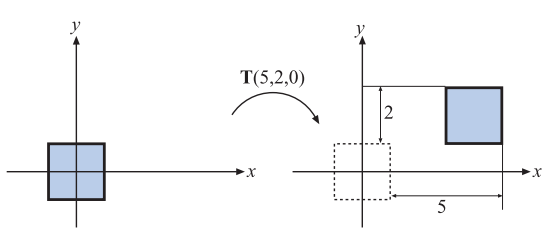
图4.1：左图中的正方形使用了一个矩阵 T（5，2，0） 来进行平移变换，其中正方形向右移动了5个单位，向上移动了2个单位。
《Real-Time Rendering》第 4 版，© CRC Press · 官方图集
这里我们需要提及一下有关矩阵表示的问题。有时候我们会在计算机图形学中看到另一种有效的矩阵表示方法，这种方法会将平移向量放在变换矩阵的最下面一行（即第四行），DirectX中就使用了这种表示方式。在这种表示方式中，矩阵元素的顺序会被颠倒，即应用程序会以从左往右的方式来读取平移变量；这种向量和矩阵的表示方法被称作行优先（row-major）表示法（也叫做行主序）。而本书中将会采用列优先（column-major）表示法（也叫做列主序），使用哪一种表示方法仅仅是符号上的区别。当我们采用行主序表示法，那么变换矩阵在内存中进行存储时，代表位移的四个分量会位于所有16个分量的最后四位，其中前三位代表了具体的位移分量，最后一位是1。
4.1.2 旋转#
旋转（rotation）变换可以将一个向量（位置或者方向），绕着一个过原点的旋转轴旋转一定的角度。与平移变换一样，旋转变换也是一个刚体变换（rigid-body transform），也就是说，被变换点之间的距离并不会发生改变，并且保持了手性（handedness），即它不会导致物体左右两边相互交换。这两种类型的变换对于计算机图形学中调整物体位置和朝向而言非常有用。方向矩阵（orientation matrix）是一个与相机视角和物体朝向相关的旋转矩阵，它定义了物体在空间中的朝向，即物体向上和向前的方向。
我们可以很容易地推导出二维空间中的旋转矩阵。假设我们现在有一个向量v = ( v x , v y ) \mathbf{v} = (v_x, v_y) v = ( v x , v y ) v = ( v x , v y ) = ( r cos θ , r sin θ ) \mathbf{v} = (v_x, v_y) = (r \cos \theta, r \sin \theta) v = ( v x , v y ) = ( r cos θ , r sin θ ) v \mathbf{v} v ϕ \phi ϕ v = ( r cos ( θ + ϕ ) , r sin ( θ + ϕ ) ) \mathbf{v} = (r \cos (\theta + \phi), r \sin (\theta + \phi)) v = ( r cos ( θ + ϕ ) , r sin ( θ + ϕ ))
u = ( r cos ( θ + ϕ ) r sin ( θ + ϕ ) ) = ( r ( cos θ cos ϕ − sin θ sin ϕ ) r ( sin θ cos ϕ + cos θ sin ϕ ) ) = ( cos ϕ − sin ϕ sin ϕ cos ϕ ) ⏟ R ( ϕ ) ( r cos θ r sin θ ) ⏟ v = R ( ϕ ) v , (4.4) \begin{aligned} \mathbf{u} & =\left(\begin{array}{c}r \cos (\theta+\phi) \\ r \sin (\theta+\phi)\end{array}\right)=\left(\begin{array}{l}r(\cos \theta \cos \phi-\sin \theta \sin \phi) \\ r(\sin \theta \cos \phi+\cos \theta \sin \phi)\end{array}\right) \\ & =\underbrace{\left(\begin{array}{rr}\cos \phi & -\sin \phi \\ \sin \phi & \cos \phi\end{array}\right)}_{\mathbf{R}(\phi)} \underbrace{\left(\begin{array}{l}r \cos \theta \\ r \sin \theta\end{array}\right)}_{\mathbf{v}}=\mathbf{R}(\phi) \mathbf{v},\end{aligned}\tag{4.4} u = ( r cos ( θ + ϕ ) r sin ( θ + ϕ ) ) = ( r ( cos θ cos ϕ − sin θ sin ϕ ) r ( sin θ cos ϕ + cos θ sin ϕ ) ) = R ( ϕ ) ( cos ϕ sin ϕ − sin ϕ cos ϕ ) v ( r cos θ r sin θ ) = R ( ϕ ) v , ( 4.4 ) 在方程4.4的推导过程中，我们使用了三角函数的二角和差公式来将cos ( θ + ϕ ) , sin ( θ + ϕ ) \cos (\theta + \phi) ,\sin (\theta + \phi) cos ( θ + ϕ ) , sin ( θ + ϕ ) R x ( ϕ ) \mathbf{R}_x(\phi) R x ( ϕ ) R y ( ϕ ) \mathbf{R}_y(\phi) R y ( ϕ ) R z ( ϕ ) \mathbf{R}_z(\phi) R z ( ϕ ) x , y , z x,y,z x , y , z ϕ \phi ϕ
R x ( ϕ ) = ( 1 0 0 0 0 cos ϕ − sin ϕ 0 0 sin ϕ cos ϕ 0 0 0 0 1 ) (4.5) \mathbf{R}_x(\phi) =
\left (
\begin{array}{}
1 & 0 & 0 & 0 \\
0 & \cos \phi & -\sin \phi & 0 \\
0 & \sin \phi & \cos \phi & 0 \\
0 & 0 & 0 & 1 \\
\end{array}
\right)
\tag{4.5} R x ( ϕ ) = 1 0 0 0 0 cos ϕ sin ϕ 0 0 − sin ϕ cos ϕ 0 0 0 0 1 ( 4.5 ) R y ( ϕ ) = ( cos ϕ 0 sin ϕ 0 0 1 0 − sin ϕ 0 cos ϕ 0 0 0 0 1 ) (4.6) \mathbf{R}_y(\phi) =
\left (
\begin{array}{}
\cos \phi & 0 & \sin \phi & 0 \\
0 & 1 & & 0 \\
-\sin \phi & 0 & \cos \phi & 0 \\
0 & 0 & 0 & 1 \\
\end{array}
\right)
\tag{4.6} R y ( ϕ ) = cos ϕ 0 − sin ϕ 0 0 1 0 0 sin ϕ cos ϕ 0 0 0 0 1 ( 4.6 ) R z ( ϕ ) = ( cos ϕ − sin ϕ 0 0 sin ϕ cos ϕ 0 0 0 0 1 0 0 0 0 1 ) (4.7) \mathbf{R}_z(\phi) =
\left (
\begin{array}{}
\cos \phi & -\sin \phi & 0 & 0 \\
\sin \phi & \cos \phi & 0 & 0 \\
0 & 0& 1 & 0 \\
0 & 0 & 0 & 1 \\
\end{array}
\right)
\tag{4.7} R z ( ϕ ) = cos ϕ sin ϕ 0 0 − sin ϕ cos ϕ 0 0 0 0 1 0 0 0 0 1 ( 4.7 ) 如果我们将这个4 × 4 4 \times 4 4 × 4 3 × 3 3 \times 3 3 × 3 ϕ \phi ϕ 3 × 3 3 \times 3 3 × 3
t r ( R ) = 1 + 2 cos ϕ (4.8) \mathsf{tr}\mathbf{(R)} = 1 + 2 \cos \phi \tag{4.8} tr ( R ) = 1 + 2 cos ϕ ( 4.8 ) 图4.4展示了旋转矩阵的具体作用效果。除了使得物体绕i i i ϕ \phi ϕ R i ( ϕ ) \mathbf{R}_i(\phi) R i ( ϕ ) i i i R \mathbf{R} R R x ( ϕ ) \mathbf{R}_x(\phi) R x ( ϕ ) R y ( ϕ ) \mathbf{R}_y(\phi) R y ( ϕ ) R z ( ϕ ) \mathbf{R}_z(\phi) R z ( ϕ )
所有旋转矩阵的行列式值都为1，并且它们都是正交矩阵。这个特征对于任意数量旋转矩阵相乘的结果也同样成立。我们还可以通过R i − 1 ( ϕ ) = R i ( − ϕ ) \mathbf{R}_i^{-1}(\phi) = \mathbf{R}_i(-\phi) R i − 1 ( ϕ ) = R i ( − ϕ )
示例：绕某个点旋转#
假设我们想让一个物体以点p \mathbf{p} p z z z ϕ \phi ϕ p \mathbf{p} p T ( − p ) \mathbf{T(-p)} T ( − p ) R z ( ϕ ) \mathbf{R}_z(\phi) R z ( ϕ ) T ( p ) \mathbf{T(p)} T ( p ) X \mathbf{X} X
X = T ( p ) R z ( ϕ ) T ( − p ) (4.9) \mathbf{X} = \mathbf{T(p)} \mathbf{R}_z(\phi) \mathbf{T(-p)} \tag{4.9} X = T ( p ) R z ( ϕ ) T ( − p ) ( 4.9 ) 这里请注意这三个变换的顺序，最先应用的变换矩阵位于方程的最右边，然后接下来的若干个变换依次左乘。
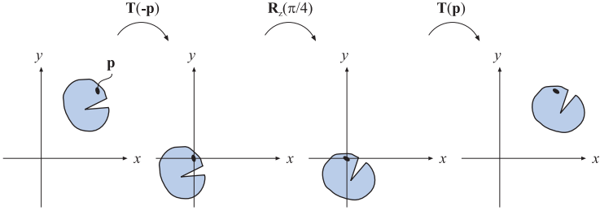
图4.2：绕点 p 旋转的过程示意图。先将物体和点 p 平移到坐标原点，然后让物体绕原点旋转一定角度，最后再将物体和点 p 反向平移回最开始的位置。
《Real-Time Rendering》第 4 版，© CRC Press · 官方图集
4.1.3 缩放#
缩放（scaling）矩阵S ( s ) = S ( s x , s y , s z ) \mathbf{S(s)} = \mathbf{S} (s_x, s_y, s_z) S ( s ) = S ( s x , s y , s z ) x , y , z x,y,z x , y , z s x , s y , s z s_x, s_y, s_z s x , s y , s z s i , i ∈ { x , y , z } s_i, i \in\{ x, y, z \} s i , i ∈ { x , y , z } S \mathbf{S} S
S ( s ) = ( s x 0 0 0 0 s y 0 0 0 0 s z 0 0 0 0 1 ) (4.10) \mathbf{S(s)} =
\left (
\begin{array}{}
s_x & 0 & 0 & 0 \\
0 & s_y & 0 & 0 \\
0 & 0 & s_z & 0 \\
0 & 0 & 0 & 1 \\
\end{array}
\right)
\tag{4.10} S ( s ) = s x 0 0 0 0 s y 0 0 0 0 s z 0 0 0 0 1 ( 4.10 ) 图4.4展示了缩放矩阵的具体效果。当s x = s y = s z s_x= s_y= s_z s x = s y = s z S − 1 ( s ) = S ( 1 / s x , 1 / s y , 1 / s z ) \mathbf{S^{-1}(s)} = \mathbf{S} (1/s_x, 1/s_y, 1/s_z) S − 1 ( s ) = S ( 1/ s x , 1/ s y , 1/ s z )
在使用齐次坐标来表示变换矩阵的时候，我们还可以通过直接操作位于矩阵( 3 , 3 ) (3,3) ( 3 , 3 ) w w w w w w w w w ( 0 , 0 ) , ( 1 , 1 ) , ( 2 , 2 ) (0,0),(1,1),(2,2) ( 0 , 0 ) , ( 1 , 1 ) , ( 2 , 2 ) ( 3 , 3 ) (3,3) ( 3 , 3 ) 1 / 5 1/5 1/5
S = ( 5 0 0 0 0 5 0 0 0 0 5 0 0 0 0 1 ) ， S ′ = ( 1 0 0 0 0 1 0 0 0 0 1 0 0 0 0 1 / 5 ) . (4.11) \mathbf{S} =
\left (
\begin{array}{}
5 & 0 & 0 & 0 \\
0 & 5 & 0 & 0 \\
0 & 0 & 5 & 0 \\
0 & 0 & 0 & 1 \\
\end{array}
\right) ，
\mathbf{S^{\prime}} =
\left (
\begin{array}{}
1 & 0 & 0 & 0 \\
0 & 1 & 0 & 0 \\
0 & 0 & 1 & 0 \\
0 & 0 & 0 & 1/5 \\
\end{array}
\right) .
\tag{4.11} S = 5 0 0 0 0 5 0 0 0 0 5 0 0 0 0 1 ， S ′ = 1 0 0 0 0 1 0 0 0 0 1 0 0 0 0 1/5 . ( 4.11 ) 相对于使用矩阵S \mathbf{S} S S ′ \mathbf{S^{\prime}} S ′ ( 3 , 3 ) (3,3) ( 3 , 3 ) w w w
如果向量s \mathbf{s} s
( cos ( π / 2 ) sin ( π / 2 ) − sin ( π / 2 ) cos ( π / 2 ) ) ⏟ r o t a t i o n ( 1 0 0 − 1 ) ⏟ r e f l e c t i o n = ( 0 − 1 − 1 0 ) (4.12) \underbrace{
\left( \begin{array}{}
\cos (\pi/2) & \sin (\pi/2) \\
-\sin (\pi/2) & \cos (\pi/2)
\end{array} \right)
}_{\mathsf{rotation}}
\underbrace{
\left( \begin{array}{}
1 & 0 \\
0 & -1 \\
\end{array} \right)
}_{\mathsf{reflection}}
=
\left( \begin{array}{}
0 & -1 \\
-1 & 0 \\
\end{array} \right)
\tag{4.12} rotation ( cos ( π /2 ) − sin ( π /2 ) sin ( π /2 ) cos ( π /2 ) ) reflection ( 1 0 0 − 1 ) = ( 0 − 1 − 1 0 ) ( 4.12 ) 通常在检测到一个镜像变换的时候，都会进行一些特殊处理。例如：一个顶点为逆时针顺序定义的三角形，在经过反射矩阵变换之后，其顶点顺序将会变成顺时针；顶点顺序的改变会导致错误的光照效果和背面剔除。我们可以通过计算左上角3 × 3 3 \times 3 3 × 3 0 ⋅ 0 − ( − 1 ) ⋅ ( − 1 ) = − 1 0 \cdot 0 - (-1) \cdot (-1) = -1 0 ⋅ 0 − ( − 1 ) ⋅ ( − 1 ) = − 1
示例：按任意方向进行缩放#
缩放矩阵S \mathbf{S} S f \mathbf{f} f f x , f y , f z \mathbf{f^x, f^y, f^z} f x , f y , f z F \mathbf{F} F
F = ( f x f y f z 0 0 0 0 1 ) (4.13) \mathbf{F} =
\left (
\begin{array}{}
\mathbf{f^x} & \mathbf{f^y} & \mathbf{f^z} & \mathbf{0} \\
0 & 0 & 0 & 1 \\
\end{array}
\right)
\tag{4.13} F = ( f x 0 f y 0 f z 0 0 1 ) ( 4.13 ) 这个变换的核心思想就是，将由f x , f y , f z \mathbf{f^x, f^y, f^z} f x , f y , f z F \mathbf{F} F F \mathbf{F} F
X = F S ( s ) F T (4.14) \mathbf{X} = \mathbf{F} \mathbf{S(s)} \mathbf{F^T} \tag{4.14} X = F S ( s ) F T ( 4.14 ) 4.1.4 剪切#
剪切（shear）变换是另一种基本变换，它可以用来对整个场景进行扭曲，从而创造出一种迷幻的效果，或者是对单个模型的外观进行扭曲。剪切变换一共包含6个基本矩阵，它们分别是H x y ( s ) \mathbf{H}_{xy}(s) H x y ( s ) H x z ( s ) \mathbf{H}_{xz}(s) H x z ( s ) H y x ( s ) \mathbf{H}_{yx}(s) H y x ( s ) H y z ( s ) \mathbf{H}_{yz}(s) H y z ( s ) H z x ( s ) \mathbf{H}_{zx}(s) H z x ( s ) H z y ( s ) \mathbf{H}_{zy}(s) H z y ( s ) H x z ( s ) \mathbf{H}_{xz}(s) H x z ( s ) s s s x x x z z z s s s ( 0 , 2 ) (0,2) ( 0 , 2 )
H x z ( s ) = ( 1 0 s 0 0 1 0 0 0 0 1 0 0 0 0 1 ) (4.15) \mathbf{H_{xz}} (s)=
\left (
\begin{array}{}
1 & 0 & s & 0 \\
0 & 1 & 0 & 0 \\
0 & 0 & 1 & 0 \\
0 & 0 & 0 & 1 \\
\end{array}
\right)
\tag{4.15} H xz ( s ) = 1 0 0 0 0 1 0 0 s 0 1 0 0 0 0 1 ( 4.15 ) 将这个矩阵和一个顶点相乘，会生成一个新的顶点：( p x + s p z p y p z ) T \begin{array}{}
(p_x + sp_z & p_y & p_z)^T
\end{array} ( p x + s p z p y p z ) T H i j ( s ) \mathbf{H}_{ij}(s) H ij ( s ) H i j − 1 ( s ) = H i j ( − s ) \mathbf{H}_{ij}^{-1}(s) = \mathbf{H}_{ij}(-s) H ij − 1 ( s ) = H ij ( − s )
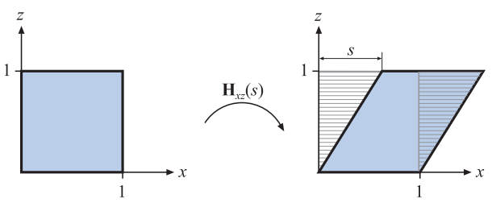
图4.3：使用 H_{xz}(s) 对单位正方形进行剪切的过程。坐标中的 y 值和 z 值都不受这个变换的影响，而新的 x 值，由原来的 x 值加上 s 与 z 值的乘积组成，这个变换让原来的单位正方形变得向右倾斜。这个变换的过程是面积保持（area-preserving）的，即变换前后的区域面积不会发生改变，我们可以看到左右两个虚线区域的面积是一样。
《Real-Time Rendering》第 4 版，© CRC Press · 官方图集
你还可以使用一种稍微不同的剪切矩阵：
H x y ′ ( s , t ) = ( 1 0 s 0 0 1 t 0 0 0 1 0 0 0 0 1 ) (4.16) \mathbf{H^{\prime}_{xy}} (s,t)=
\left (
\begin{array}{}
1 & 0 & s & 0 \\
0 & 1 & t & 0 \\
0 & 0 & 1 & 0 \\
0 & 0 & 0 & 1 \\
\end{array}
\right)
\tag{4.16} H xy ′ ( s , t ) = 1 0 0 0 0 1 0 0 s t 1 0 0 0 0 1 ( 4.16 ) 这里的剪切变换包含两个输入参数，它们代表了这两个坐标（x , y x,y x , y z z z H x y ′ ( s , t ) = H i k ( s ) H j k ( t ) \mathbf{H^{\prime}_{xy}} (s,t) = \mathbf{H}_{ik}(s) \mathbf{H}_{jk}(t) H xy ′ ( s , t ) = H ik ( s ) H j k ( t ) k k k ∣ H ∣ = 1 \vert \mathbf{H} \vert =1 ∣ H ∣ = 1
4.1.5 变换的连接#
由于矩阵之间的乘法不具备交换律（noncommutativity），因此矩阵在乘法式子中的顺序十分重要。变换的连接是与顺序相关的。
我们举一个矩阵顺序相关的例子：假如我们现在有两个矩阵S , R \mathbf{S,R} S , R S ( 2 , 0.5 , 1 ) \mathbf{S}(2,0.5,1) S ( 2 , 0.5 , 1 ) x x x y y y R z ( π / 6 ) \mathbf{R}_z(\pi / 6) R z ( π /6 ) z z z z z z π / 6 \pi/6 π /6
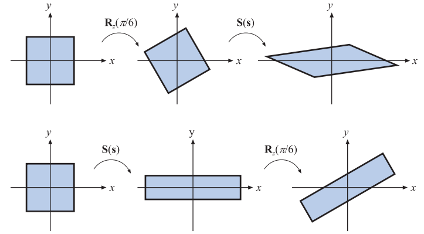
图4.4：上图展示了矩阵相乘的顺序依赖性。在第一行中，先进行了旋转变换 R_z(\pi / 6) ，然后再进行了缩放变换 S(s) ，其中 s = (2,0.5,1) ，总变换为 S(s) R_z(\pi / 6) ；在第二行中，两个向量交换了相乘的顺序，总变换为 R_z(\pi / 6) S(s) ，这两个组合变换的结果完全不同。对于任意的矩阵 M,N 而言， MN ≠ NM ，即矩阵的乘法不具备交换律。
《Real-Time Rendering》第 4 版，© CRC Press · 官方图集
将一系列矩阵组合成一个独立矩阵有一个好处，那就是可以获得更高的执行效率。例如：想象我们现在有一个包含几百万顶点的游戏场景，场景中的所有物体都需要进行缩放、旋转和平移变换。这里我们并不会将所有的顶点都与这三个变换矩阵挨个相乘，因为这样做的效率实在是太低了；我们会将这三个矩阵连接成一个独立的矩阵，然后对所有顶点都应用这个相同的组合变换矩阵。这个组合矩阵可以写作C = T R S \mathbf{C = TRS} C = TRS S \mathbf{S} S T R S p = ( T ( R ( S p ) ) ) \mathbf{TRSp} = \mathbf{(T(R(Sp)))} TRSp = ( T ( R ( Sp ))) p \mathbf{p} p T R S \mathbf{TRS} TRS
值得注意的是，虽然矩阵连接的结果是与顺序相关的，但是矩阵和矩阵之间可以进行分组计算，也就是说，矩阵乘法是具有结合律的。例如：假设我们按照T R S p \mathbf{TRSp} TRSp T R \mathbf{TR} TR ( T R ) ( S p ) \mathbf{(TR)(Sp)} ( TR ) ( Sp ) T R \mathbf{TR} TR T R S p \mathbf{TRSp} TRSp
4.1.6 刚体变换#
现在我们想象这样的一个过程，当一个人抓起一个固体物体（比如说从桌子上拿起一支笔），然后将其移动到另一个位置上（可能是衬衫口袋里），在这个过程中，仅仅是物体的位置和朝向发生了变化，其形状和大小并没有受到任何影响。我们将这样只包含平移和旋转的变换叫做刚体变换（rigid-body transform），它具有保持长度、角度和手性的特点。
任何刚体变换矩阵X \mathbf{X} X T ( t ) \mathbf{T(t)} T ( t ) R \mathbf{R} R X \mathbf{X} X
X = T ( t ) R = ( r 00 r 01 r 02 t x r 10 r 11 r 12 t y r 20 r 21 r 22 t z 0 0 0 1 ) (4.17) \mathbf{X} = \mathbf{T(t)R}=
\left (
\begin{array}{}
r_{00} & r_{01} & r_{02} & t_x \\
r_{10} & r_{11} & r_{12} & t_y \\
r_{20} & r_{21} & r_{22} & t_z \\
0 & 0 & 0 & 1 \\
\end{array}
\right)
\tag{4.17} X = T ( t ) R = r 00 r 10 r 20 0 r 01 r 11 r 21 0 r 02 r 12 r 22 0 t x t y t z 1 ( 4.17 ) 刚体变换矩阵X \mathbf{X} X
X − 1 = ( T ( t ) R ) − 1 = R − 1 T ( t ) − 1 = R T T ( − t ) \mathbf{X^{-1} = (T(t)R)^{-1} = R^{-1}T(t)^{-1} = R^TT(-t)} X − 1 = ( T ( t ) R ) − 1 = R − 1 T ( t ) − 1 = R T T ( − t ) 为了计算这个逆矩阵，旋转矩阵R \mathbf{R} R 3 × 3 3 \times 3 3 × 3 T \mathbf{T} T X \mathbf{X} X R , T \mathbf{R,T} R , T
R ˉ = ( r , 0 r , 1 r , 2 ) = ( r 0 , T r 1 , T r 2 , T ) , X = ( R ˉ t 0 T 1 ) , (4.18) \begin{array}{}
\mathbf{\bar{R}} =
\left ( \begin{array}{}
\mathbf{r}_{,0} & \mathbf{r}_{,1} & \mathbf{r}_{,2}
\end{array} \right)
=
\left ( \begin{array}{}
\mathbf{r}_{0,} ^T \\[1mm]
\mathbf{r}_{1,} ^T \\[1mm]
\mathbf{r}_{2,} ^T
\end{array} \right) ,
\\
\mathbf{X}
=
\left ( \begin{array}{}
\mathbf{\bar{R}} & \mathbf{t} \\
\mathbf{0} ^T & 1
\end{array} \right) ,
\end{array}
\tag{4.18} R ˉ = ( r , 0 r , 1 r , 2 ) = r 0 , T r 1 , T r 2 , T , X = ( R ˉ 0 T t 1 ) , ( 4.18 ) 其中r , 0 \mathbf{r}_{,0} r , 0 r 0 , T \mathbf{r}_{0,} ^T r 0 , T 0 \mathbf{0} 0 3 × 1 3 \times 1 3 × 1 X \mathbf{X} X
X − 1 = ( r 0 , r 1 , r 2 , − R ˉ T t 0 0 0 1 ) (4.19) \mathbf{X^{-1}} =
\left ( \begin{array}{}
\mathbf{r}_{0,} & \mathbf{r}_{1,} & \mathbf{r}_{2,} & \mathbf{-\bar{R}^T{}t}\\
0&0&0&1
\end{array} \right)
\tag{4.19} X − 1 = ( r 0 , 0 r 1 , 0 r 2 , 0 − R ˉ T t 1 ) ( 4.19 ) 示例：调整相机的朝向#
在图形程序中有一个十分常见的操作，即调整相机的朝向，使其观察某一个指定的点。有一个叫做g l u L o o k A t ( ) \mathsf{gluLookAt}() gluLookAt ( ) c \mathbf{c} c l \mathbf{l} l u ′ \mathbf{u^{\prime}} u ′
图4.5：计算一个变换矩阵，使得位于点 c 的相机看向点 l ，并且向上的向量为 \mathbf{u^{\prime}} 。为了实现这个目的，我们需要计算 r,u,v 。
《Real-Time Rendering》第 4 版，© CRC Press · 官方图集
这里我们需要计算一个包含三个向量{ r , u , v } \{ \mathbf{r,u,v} \} { r , u , v } v = ( l − c ) / ∥ l − c ∥ \mathbf{v = (l-c) / \Vert l-c \Vert} v = ( l − c ) /∥l − c∥ r = ( v × u ′ ) / ∥ v × u ′ ∥ \mathbf{r = (v \times u^{\prime}) / \Vert v \times u^{\prime} \Vert} r = ( v × u ′ ) /∥v × u ′ ∥ u ′ \mathbf{u^{\prime}} u ′ u = r × v \mathbf{u = r \times v} u = r × v v , r \mathbf{v,r} v , r u \mathbf{u} u M \mathbf{M} M ( 0 , 0 , 0 ) (0,0,0) ( 0 , 0 , 0 ) r \mathbf{r} r ( 1 , 0 , 0 ) (1,0,0) ( 1 , 0 , 0 ) u \mathbf{u} u ( 0 , 1 , 0 ) (0,1,0) ( 0 , 1 , 0 ) v \mathbf{v} v ( 0 , 0 , − 1 ) (0,0,-1) ( 0 , 0 , − 1 )
M = ( r x r y r z 0 u x u y u z 0 − v x − v y − v z 0 0 0 0 1 ) ⏟ c h a n g e o f b a s i s ( 1 0 0 − t x 0 1 0 − t y 0 0 1 − t z 0 0 0 1 ) ⏟ t r a n s l a t i o n = ( r x r y r z − t ⋅ r u x u y u z − t ⋅ u − v x − v y − v z t ⋅ v 0 0 0 1 ) (4.20) \begin{array}{}
\mathbf{M} &=
\underbrace{
\left ( \begin{array}{}
r_x & r_y & r_z & 0 \\
u_x & u_y & u_z & 0 \\
-v_x & -v_y & -v_z & 0 \\
0 & 0 & 0 & 1 \\
\end{array} \right)
}_{\mathsf{change\ of \ basis}}
\underbrace{
\left ( \begin{array}{}
1 & 0 & 0 & -t_x \\
0 & 1 & 0 & -t_y \\
0 & 0 & 1 & -t_z \\
0 & 0 & 0 & 1 \\
\end{array} \right)
}_{\mathsf{translation}}
\\[4mm]
&=\left ( \begin{array}{}
r_x & r_y & r_z & -\mathbf{t \cdot r} \\
u_x & u_y & u_z & -\mathbf{t \cdot u} \\
-v_x & -v_y & -v_z & \mathbf{t \cdot v} \\
0 & 0 & 0 & 1 \\
\end{array} \right)
\end{array}
\tag{4.20} M = change of basis r x u x − v x 0 r y u y − v y 0 r z u z − v z 0 0 0 0 1 translation 1 0 0 0 0 1 0 0 0 0 1 0 − t x − t y − t z 1 = r x u x − v x 0 r y u y − v y 0 r z u z − v z 0 − t ⋅ r − t ⋅ u t ⋅ v 1 ( 4.20 ) 请注意，这里我们将平移矩阵和基底变换矩阵组合在了一起，第一步进行的应当是平移变换，因此平移矩阵− t \mathbf{-t} − t r , u , v \mathbf{r,u,v} r , u , v r \mathbf{r} r ( 1 , 0 , 0 ) (1,0,0) ( 1 , 0 , 0 ) ( 1 , 0 , 0 ) (1,0,0) ( 1 , 0 , 0 ) r \mathbf{r} r r ⋅ r = 1 \mathbf{r} \cdot \mathbf{r}=1 r ⋅ r = 1 r \mathbf{r} r r ⋅ x = 0 \mathbf{r \cdot x} = 0 r ⋅ x = 0 u , v \mathbf{u,v} u , v
4.1.7 法线变换#
矩阵可以用于对点、线、三角形和其他几何物体进行变换，这些矩阵同样也可以对这些线或者三角形表面的切向量（tangent vector）进行变换，然而有一个重要的几何属性并不能总是使用这些矩阵直接进行变换，即表面法线（以及顶点的光照法线）。图4.6展示了如果使用同样的矩阵同时对几何物体及其法线进行变换的结果。
图4.6：左侧是原始的几何体，它从侧面展示了一个三角形及其表面法线。在中间的图中，使用了一个缩放矩阵来将几何体在 x 轴方向上缩放为原来的0.5倍，并使用这个缩放矩阵对法线进行了变换，变换后的法线并不是这个三角形的表面法线。右图中则展示了法线正确变换后的结果。
《Real-Time Rendering》第 4 版，© CRC Press · 官方图集
对法线正确的变换方法是：使用原始变换矩阵的伴随矩阵（adjoint）的转置矩阵来对其进行变换，而不是使用原始变换矩阵本身[227]。你可以在我们网站上的线性代数附录中，找到有关计算伴随矩阵的相关内容，这里你需要知道的是：矩阵的伴随矩阵是始终存在的。法线在经过变换之后，其长度可能会发生变化，因此在变换后通常还需要对法线进行归一化处理。
法线变换的传统方法是，计算原始变换矩阵的逆矩阵的转置[1794]，即( M − 1 ) T \mathbf{(M^{-1})^T} ( M − 1 ) T
进一步说，即使我们只计算一个4 × 4 4 \times 4 4 × 4 w w w 3 × 3 3 \times 3 3 × 3
实际上，我们甚至都不需要计算这个伴随矩阵。假设我们已经知道了这个变换矩阵是完全由平移、旋转和均匀缩放（没有被拉伸或者压缩）操作组合而成的，那么首先平移变换并不会对法线产生影响，其次均匀缩放仅仅会对法线的长度产生影响，剩下的就是一系列旋转变换了，这些旋转变换最终会组合在一起，形成一个总的旋转变换矩阵。上文中我们说到，我们可以使用原始变换矩阵的逆转置矩阵，来对法线进行变换；而旋转矩阵本身是一个正交矩阵，其逆矩阵和转置矩阵是一样的，也就是说，我们对一个旋转矩阵进行两次转置（或者两次求逆）操作之后，得到的矩阵就是最初的旋转矩阵本身。总而言之，在这样的条件下（进行了平移、旋转和均匀缩放操作），我们可以直接使用模型的变换矩阵来对法线进行变换；但是如果模型变换涉及了非均匀缩放或者投影操作，那么就无法使用这种方法对法线进行变换了。
最后我们需要考虑是否要对法线进行归一化处理，如果模型变换只涉及平移或者旋转的话，那么法线的长度是不会发生改变的，因此也就不需要进行归一化处理。如果变换中的缩放是均匀缩放的话，那么这个均匀缩放系数（如果是已知的，或者是已经被提取出来的话，有关提取这个均匀缩放系数的话题会在章节4.2.3中进行讨论）也可以直接用来对法线进行归一化处理（直接按照均匀缩放系数进行反向缩放即可）。例如：如果我们知道了一系列的均匀变换最终会导致物体比之前放大5.2倍，并且法线应用了这个变换矩阵的话，我们可以直接将法线的长度除以5.2即可（即缩小为原来的5.2倍）。除此之外，我们还可以将这一步放在对法线变换之前，让左上角3 × 3 3 \times 3 3 × 3
还有一点需要注意一下，如果表面法线是从变换之后的三角形中计算出来的话（例如使用三角形的边向量进行叉乘，从而获得垂直于三角形表面的法线），那么法线变换的问题就不需要进行考虑了。切向量的本质和法线并不相同，它可以直接使用原始变换矩阵进行变换。
4.1.8 计算逆矩阵#
有很多计算都需要使用逆矩阵，例如在不同的坐标系间来回切换的时候。根据一个变换的可用信息不同，我们可以使用以下三种方法来计算一个逆矩阵：
如果某个矩阵是一次很简单的变换，或者是一系列带参简单变换的组合的话，那么我们可以通过反转“参数”和矩阵次序的方式，来获得这个矩阵的逆矩阵，即进行一系列的反向变换。例如：现在有一个变换矩阵M = T ( t ) R ( ϕ ) \mathbf{M}=\mathbf{T(t)}\mathbf{R}(\phi) M = T ( t ) R ( ϕ ) M − 1 = R ( − ϕ ) T ( − t ) \mathbf{M^{-1}} = \mathbf{R}(-\phi)\mathbf{T(-t)} M − 1 = R ( − ϕ ) T ( − t )
如果一个矩阵是正交矩阵的话，那么其逆矩阵和转置矩阵是相等的，即M − 1 = M T \mathbf{M^{-1}} = \mathbf{M^{T}} M − 1 = M T
如果这些信息都不知道的话，那么我们还可以使用伴随矩阵法、Cramer法则、LU分解法、高斯消元法等方法来计算一个矩阵的逆矩阵。伴随矩阵法和Cramer法则通常要更好一些，因为它们所涉及的分支操作较少；在现代的GPU架构中，最好还是避免使用分支结构。在章节4.1.7中我们提到了如何使用伴随矩阵法来对法线进行正确的变换。
在进行性能优化的时候，我们还可以对逆矩阵的计算目的进行考虑。例如：如果这个逆矩阵仅仅是用来对向量进行变换的话，那么通常我们只需要获得左上角3 × 3 3 \times 3 3 × 3
4.2 特殊的矩阵变换和操作#
在本小节中，我们会介绍并推导若干个对于实时渲染非常重要的矩阵变换和操作。首先我们会介绍欧拉变换（以及如何提取欧拉变换的参数），这是一种描述方向和旋转的直观方法。然后我们会介绍如何在单个变换矩阵中，提取出一组基本变换（分解变换矩阵）。最后我们会推导一种绕任意轴旋转物体的方法。
4.2.1 欧拉变换#
欧拉变换可以构建一个旋转矩阵，将我们自身（相机）或者其他物体指向一个特定的方向，这是一种十分直观的方式，其名字来源于伟大的瑞士数学家 Leonhard Euler (1707–1783)。
图4.7：欧拉变换和改变头部角度（head）、俯仰角（pitch）以及滚转角（roll）之间的关系。相机的默认位置是看向 z 轴负半轴，同时up方向与 y 轴正半轴重合。
《Real-Time Rendering》第 4 版，© CRC Press · 官方图集
首先，我们需要有一个默认的观察方向，通常来说都会让这个方向指向z z z y y y E \mathbf{E} E
E ( h , p , r ) = R z ( r ) R x ( p ) R y ( h ) (4.21) \mathbf{E}(h,p,r) = \mathbf{R}_z(r) \mathbf{R}_x(p)\mathbf{R}_y(h) \tag{4.21} E ( h , p , r ) = R z ( r ) R x ( p ) R y ( h ) ( 4.21 ) 在欧拉变换中，矩阵的组合方式一共有24种[1636]（6个两轴旋转，6个三轴旋转；以及内旋外旋两种方式。12 × 2 = 24 12\times 2=24 12 × 2 = 24 E \mathbf{E} E E \mathbf{E} E = ( R z R x R y ) T = R y T R x T R z T = (\mathbf{R}_z \mathbf{R}_x \mathbf{R}_y)^T = \mathbf{R}_y^T \mathbf{R}_x^T\mathbf{R}_z^T = ( R z R x R y ) T = R y T R x T R z T E T \mathbf{E}^T E T
其中的欧拉角参数h , p , r h,p,r h , p , r
这种变换的方式是非常直观的，因此不使用专业术语也可以很形象对其进行描述。例如：改变head角度会让观察者摇头；改变俯仰角会让观察者点头；改变滚转角会让观察者的头部向肩膀倾斜。这里我们使用了head，pitch，roll来描述旋转的方向，而不是使用绕x , y , z x,y,z x , y , z
值得注意的是，在一些欧拉角的表示中，会让z z z z z z z z z x , y x,y x , y y y y 90 ∘ 90^{\circ} 9 0 ∘
这里我们还想指出一点，相机在其视图空间中的up方向和世界空间中的up方向没有什么特殊关系，我们可以左右倾斜自己的头部，这时我们眼睛的视野也会相应的倾斜，此时头部的up方向和世界空间中的up方向并不是重合的。再举一个例子：如果现在世界空间使用了y-up，而我们的相机正以一个鸟瞰视角俯瞰整个世界。这个视角朝向意味着我们的相机视角向前旋转了90 ∘ 90^{\circ} 9 0 ∘ ( 0 , 0 , − 1 ) (0,0,-1) ( 0 , 0 , − 1 ) y y y z z z
欧拉角在小角度变化和调整观察者朝向方面十分有用，但是它也有一些严重的限制，即我们很难将两组欧拉角组合在一起。例如：在两组欧拉角之间进行插值，并不是简单地对每个分量分别进行插值就可以完成的。事实上，两组表示形式完全不同的欧拉角，可能会给出完全相同的方向，因此对这两组欧拉角进行插值的话，中间生成的任何一组欧拉角，在理想情况下都不应当导致物体发生旋转。这也是使用其他方向表示方法（例如四元数）的原因之一，我们将在之后的小节中对四元数进行详细讨论，这是十分有价值的。使用欧拉角也会导致一个叫做万向节死锁（gimbal lock）的问题，我们将在章节4.2.2中对其进行介绍。
4.2.2 从欧拉变换中提取参数#
在某些情况下，我们需要从一个代表欧拉变换的矩阵中，提取出各个方向上所改变的角度，即欧拉变换的参数h , p , r h,p,r h , p , r
E ( h , p , r ) = ( e 00 e 01 e 02 e 10 e 11 e 12 e 20 e 21 e 22 ) = R z ( r ) R x ( p ) R y ( h ) (4.22) \mathbf{E}(h,p,r) =
\left ( \begin{array}{}
e_{00} & e_{01} & e_{02} \\
e_{10} & e_{11} & e_{12} \\
e_{20} & e_{21} & e_{22} \\
\end{array} \right)
= \mathbf{R}_z(r) \mathbf{R}_x(p)\mathbf{R}_y(h) \tag{4.22} E ( h , p , r ) = e 00 e 10 e 20 e 01 e 11 e 21 e 02 e 12 e 22 = R z ( r ) R x ( p ) R y ( h ) ( 4.22 ) 齐次变换矩阵是4 × 4 4 \times 4 4 × 4 3 × 3 3 \times 3 3 × 3 4 × 4 4 \times 4 4 × 4
我们将三个旋转矩阵相乘，可以获得以下结果：
E = ( cos r cos h − sin r sin p sin h − sin r cos p cos r sin h + sin r sin p cos h sin r cos h + cos r sin p sin h cos r cos p sin r sin h − cos r sin p cos h − cos p sin h sin p cos p cos h ) (4.23) \mathbf{E}=
\left ( \begin{array}{}
\cos r \cos h - \sin r \sin p \sin h & - \sin r \cos p & \cos r \sin h + \sin r \sin p \cos h \\
\sin r \cos h + \cos r \sin p \sin h & \cos r \cos p & \sin r \sin h - \cos r \sin p \cos h \\
-\cos p \sin h & \sin p & \cos p \cos h \\
\end{array} \right)
\tag{4.23} E = cos r cos h − sin r sin p sin h sin r cos h + cos r sin p sin h − cos p sin h − sin r cos p cos r cos p sin p cos r sin h + sin r sin p cos h sin r sin h − cos r sin p cos h cos p cos h ( 4.23 ) 在方程4.23中，我们可以很明显的看出sin p = e 21 \sin p = e_{21} sin p = e 21 e 01 e_{01} e 01 e 11 e_{11} e 11 r r r e 20 e_{20} e 20 e 22 e_{22} e 22 h h h
e 01 e 11 = − sin r cos r = − tan r , e 20 e 22 = − sin h cos h = − tan h (4.24) \frac{e_{01}}{e_{11}} =
\frac{-\sin r}{\cos r} = -\tan r ,\qquad
\frac{e_{20}}{e_{22}} =
\frac{-\sin h}{\cos h} = -\tan h
\tag{4.24} e 11 e 01 = cos r − sin r = − tan r , e 22 e 20 = cos h − sin h = − tan h ( 4.24 ) 也就是说，我们可以使用a t a n 2 ( y , x ) \mathsf{atan2(y,x)} atan2 ( y , x ) E \mathbf{E} E h h h p p p r r r
h = a t a n 2 ( − e 20 , e 22 ) p = arcsin ( e 21 ) r = a t a n 2 ( − e 01 , e 11 ) (4.25) \begin{align}{}
h &= \mathsf{atan2}(-e_{20},e_{22}) \\
p &= \arcsin (e_{21}) \\
r &= \mathsf{atan2}(-e_{01},e_{11}) \\
\end{align}
\tag{4.25} h p r = atan2 ( − e 20 , e 22 ) = arcsin ( e 21 ) = atan2 ( − e 01 , e 11 ) ( 4.25 ) 但是，这里我们还需要处理一种特殊情况，即当cos p = 0 \cos p = 0 cos p = 0 r , h r,h r , h p p p − π / 2 -\pi/2 − π /2 π / 2 \pi/2 π /2 h = 0 h=0 h = 0 E \mathbf{E} E
E 1 = ( cos r cos h − sin r sin h 0 cos r sin h + sin r cos h sin r cos h + cos r sin h 0 sin r sin h − cos r cos h 0 1 0 ) = ( cos ( r + h ) 0 sin ( r + h ) sin ( r + h ) 0 cos ( r + h ) 0 1 0 ) , p = π / 2 E 2 = ( cos r cos h + sin r sin h 0 cos r sin h − sin r cos h sin r cos h − cos r sin h 0 sin r sin h + cos r cos h 0 − 1 0 ) = ( cos ( r − h ) 0 sin ( r − h ) sin ( r − h ) 0 cos ( r − h ) 0 − 1 0 ) , p = − π / 2 (4.25.1) \begin{align}{}
\mathbf{E_1}& =
\left ( \begin{array}{}
\cos r \cos h - \sin r \sin h & 0 & \cos r \sin h + \sin r \cos h \\
\sin r \cos h + \cos r \sin h & 0 & \sin r \sin h - \cos r \cos h \\
0 & 1 & 0 \\
\end{array} \right)
\\[5mm]&=
\left ( \begin{array}{}
\cos (r+h) & 0 & \sin (r+h) \\
\sin (r+h) & 0 & \cos (r+h) \\
0 & 1 & 0 \\
\end{array} \right) ,p = \pi/2
\\[10mm]
\mathbf{E_2}&=
\left ( \begin{array}{}
\cos r \cos h + \sin r \sin h & 0 & \cos r \sin h - \sin r \cos h \\
\sin r \cos h - \cos r \sin h & 0 & \sin r \sin h + \cos r \cos h \\
0 & -1 & 0 \\
\end{array} \right)
\\[5mm]&=
\left ( \begin{array}{}
\cos (r-h) & 0 & \sin (r-h) \\
\sin (r-h) & 0 & \cos (r-h) \\
0 & -1 & 0 \\
\end{array} \right) ,p = -\pi/2
\end{align}
\tag{4.25.1} E 1 E 2 = cos r cos h − sin r sin h sin r cos h + cos r sin h 0 0 0 1 cos r sin h + sin r cos h sin r sin h − cos r cos h 0 = cos ( r + h ) sin ( r + h ) 0 0 0 1 sin ( r + h ) cos ( r + h ) 0 , p = π /2 = cos r cos h + sin r sin h sin r cos h − cos r sin h 0 0 0 − 1 cos r sin h − sin r cos h sin r sin h + cos r cos h 0 = cos ( r − h ) sin ( r − h ) 0 0 0 − 1 sin ( r − h ) cos ( r − h ) 0 , p = − π /2 ( 4.25.1 ) 当cos p = 0 \cos p = 0 cos p = 0 e 01 , e 11 , e 20 , e 21 e_{01},e_{11},e_{20},e_{21} e 01 , e 11 , e 20 , e 21 cos p \cos p cos p h , r h,r h , r 4.25.1 4.25.1 4.25.1 r + h r+h r + h r − h r-h r − h h = 0 h = 0 h = 0 cos h = 1 , sin h = 0 \cos h = 1,\sin h =0 cos h = 1 , sin h = 0
E = ( cos r − sin r cos p sin r sin p sin r cos r cos p − cos r sin p 0 sin p cos p ) (4.26) \mathbf{E}=
\left ( \begin{array}{}
\cos r & -\sin r \cos p & \sin r \sin p \\
\sin r & \cos r \cos p & - \cos r \sin p \\
0 & \sin p & \cos p \\
\end{array} \right)
\tag{4.26} E = cos r sin r 0 − sin r cos p cos r cos p sin p sin r sin p − cos r sin p cos p ( 4.26 ) 我们可以看出，由于旋转角度p p p cos p = 0 \cos p = 0 cos p = 0 sin r / cos r = tan r = e 10 / e 00 \sin r / \cos r = \tan r = e_{10} / e_{00} sin r / cos r = tan r = e 10 / e 00 r = a t a n 2 ( − e 10 , e 00 ) r = \mathsf{atan2}(-e_{10},e_{00}) r = atan2 ( − e 10 , e 00 ) r r r
另外请注意，函数arcsin的定义域是− π / 2 ≤ p ≤ π / 2 -\pi/2 \le p \le \pi/2 − π /2 ≤ p ≤ π /2 p p p E \mathbf{E} E p p p h , p , r h,p,r h , p , r
当我们使用欧拉变换的时候，有时会发生一种叫做万向节死锁（gimbal lock）的现象，即在旋转的过程中失去了一个自由度。例如：假设我们现在按照x , y , z x,y,z x , y , z y y y π / 2 \pi/2 π /2 z z z x x x z z z
在数学上，我们已经在方程4.25.1和方程4.26中看到了万向节死锁的现象，在方程中我们假设了cos p = 0 \cos p = 0 cos p = 0 p = ± π / 2 + 2 π k p = \pm \pi/2 + 2\pi k p = ± π /2 + 2 π k k k k p p p r + h r+h r + h r − h r-h r − h r , h r,h r , h
在建模系统中，通常会使用x , y , z x,y,z x , y , z z , x , y z,x,y z , x , y z , x , z z,x,z z , x , z z , x , z z,x,z z , x , z x x x π \pi π 180 ∘ 180^{\circ} 18 0 ∘
示例：约束变换#
想象我们现在拿着一个虚拟的扳手，这个扳手正抓着一个螺栓；为了让这个螺栓安装到位，我们需要绕着x x x x x x P \mathbf{P} P x x x R x ( p ) \mathbf{R}_x(p) R x ( p ) R x ( p ) \mathbf{R}_x(p) R x ( p ) x x x P \mathbf{P} P x x x
4.2.3 矩阵分解#
到目前为止，我们所做的工作都建立在这样的一个假设上，即已经知道了原始变换矩阵及其变换过程；但是更多的时候，我们实际上并不清楚这些信息。例如：我们只知道有一个变换矩阵和被变换的物体，现在的任务是从在这个总变换矩阵中，分解出各种各样的子变换矩阵，这个过程叫做矩阵分解（matrix decomposition）。
矩阵分解有很多用途，例如：
提取物体的缩放因子。
找到一个指定坐标系中所需要的变换（例如：某些系统和变换不允许使用任意的4 × 4 4 \times 4 4 × 4
确定一个物体是否只经历了刚体变换。
在只有物体的变换矩阵可用的情况下，在动画的关键帧之间进行插值。
移除一个旋转变换矩阵中的剪切变换。
在前文中我们其实已经展示了两个矩阵分解的例子，例如从一个刚体变换中提取出平移矩阵和旋转矩阵（章节4.1.6）；从一个正交矩阵中提取出欧拉角（章节4.2.2）。
在上文中的两个例子中我们可以看到，从一个变换矩阵中提取出平移矩阵是很简单的，我们只需要找到4 × 4 4 \times 4 4 × 4
幸运的是，有几篇关于这个话题的文章，它们都提供了可用的在线代码。Thomas [1769]和Goldman [552, 553]各自都为不同类型的转换提供了对应方法。Shoemake [1635]对他们处理仿射矩阵的方法进行了改进，该算法是独立于参考系的，并且试图对原始的变换矩阵进行分解，从而提取出刚体变换矩阵。
4.2.4 绕任意轴旋转#
有时候，能够让一个物体绕着任意轴旋转是一件很方便的事情，假设我们现在有一个归一化的旋转轴r \mathbf{r} r r \mathbf{r} r α \alpha α
为了完成这个绕任意轴旋转的操作，我们首先需要进行一次空间变换，将旋转轴r \mathbf{r} r x x x M \mathbf{M} M M − 1 \mathbf{M}^{-1} M − 1
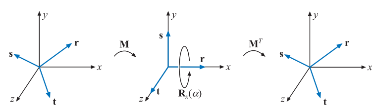
图4.8：上图展示了绕任意轴 r 进行旋转的变换流程。我们首先需要找到一组标准正交基 r,s,t 。然将这个基底与标准基底（坐标轴）重合，即使得旋转轴 r 与 x 轴重合；然后进行绕 x 轴旋转 \alpha 度的操作；最后再反向旋转回来。
《Real-Time Rendering》第 4 版，© CRC Press · 官方图集
为了计算这个旋转矩阵M \mathbf{M} M r \mathbf{r} r s \mathbf{s} s t \mathbf{t} t t = r × s \mathbf{t = r \times s} t = r × s r \mathbf{r} r r \mathbf{r} r
s ‾ = { ( 0 , − r z , r y ) , if ∣ r x ∣ ≤ ∣ r y ∣ and ∣ r x ∣ ≤ ∣ r z ∣ , ( − r z , 0 , r x ) , if ∣ r y ∣ ≤ ∣ r x ∣ and ∣ r y ∣ ≤ ∣ r z ∣ , ( − r y , r x , 0 ) , if ∣ r z ∣ ≤ ∣ r x ∣ and ∣ r z ∣ ≤ ∣ r y ∣ , s = s ‾ / ∣ ∣ s ‾ ∣ ∣ , t = r × s . (4.27) \begin{array}{l}\overline{\mathbf{s}}=\left\{\begin{array}{ll}\left(0,-r_{z}, r_{y}\right), & \text { if }\left|r_{x}\right| \leq\left|r_{y}\right| \text { and }\left|r_{x}\right| \leq\left|r_{z}\right|, \\ \left(-r_{z}, 0, r_{x}\right), & \text { if }\left|r_{y}\right| \leq\left|r_{x}\right| \text { and }\left|r_{y}\right| \leq\left|r_{z}\right|, \\ \left(-r_{y}, r_{x}, 0\right), & \text { if }\left|r_{z}\right| \leq\left|r_{x}\right| \text { and }\left|r_{z}\right| \leq\left|r_{y}\right|,\end{array}\right. \\[6mm] \mathbf{s}=\overline{\mathbf{s}} /|| \overline{\mathbf{s}}||, \\[1mm] \mathbf{t}=\mathbf{r} \times \mathbf{s} .\end{array}
\tag{4.27} s = ⎩ ⎨ ⎧ ( 0 , − r z , r y ) , ( − r z , 0 , r x ) , ( − r y , r x , 0 ) , if ∣ r x ∣ ≤ ∣ r y ∣ and ∣ r x ∣ ≤ ∣ r z ∣ , if ∣ r y ∣ ≤ ∣ r x ∣ and ∣ r y ∣ ≤ ∣ r z ∣ , if ∣ r z ∣ ≤ ∣ r x ∣ and ∣ r z ∣ ≤ ∣ r y ∣ , s = s /∣∣ s ∣∣ , t = r × s . ( 4.27 ) 上述方程保证了s ˉ \mathbf{\bar{s}} s ˉ r \mathbf{r} r t \mathbf{t} t r , s \mathbf{r,s} r , s ( r , s , t ) \mathbf{(r,s,t)} ( r , s , t ) M \mathbf{M} M
M = ( r T s T t T ) (4.28) \mathbf{M}=
\left ( \begin{array}{}
\mathbf{r}^T \\
\mathbf{s}^T \\
\mathbf{t}^T \\
\end{array} \right)
\tag{4.28} M = r T s T t T ( 4.28 ) 在经过旋转矩阵M \mathbf{M} M r \mathbf{r} r x x x s \mathbf{s} s y y y t \mathbf{t} t z z z r \mathbf{r} r α \alpha α
X = M T R x ( α ) M (4.29) \mathbf{X} = \mathbf{M}^T \mathbf{R}_x(\alpha) \mathbf{M}
\tag{4.29} X = M T R x ( α ) M ( 4.29 ) 换句话说，我们通过变换，先将旋转轴r \mathbf{r} r x x x M \mathbf{M} M x x x α \alpha α M \mathbf{M} M M \mathbf{M} M M T \mathbf{M}^{T} M T
Goldman [550]还提出了另外一种绕任意归一化轴r \mathbf{r} r ϕ \phi ϕ
R = ( cos ϕ + ( 1 − cos ϕ ) r x 2 ( 1 − cos ϕ ) r x r y − r z sin ϕ ( 1 − cos ϕ ) r x r z + r y sin ϕ ( 1 − cos ϕ ) r x r y + r z sin ϕ cos ϕ + ( 1 − cos ϕ ) r y 2 ( 1 − cos ϕ ) r y r z − r x sin ϕ ( 1 − cos ϕ ) r x r z − r y sin ϕ ( 1 − cos ϕ ) r y r z + r x sin ϕ cos ϕ + ( 1 − cos ϕ ) r z 2 ) (4.30) \mathbf{R} = \left(\begin{array}{ccc}
\cos \phi+(1-\cos \phi) r_{x}^{2} & (1-\cos \phi) r_{x} r_{y}-r_{z} \sin \phi & (1-\cos \phi) r_{x} r_{z}+r_{y} \sin \phi \\
(1-\cos \phi) r_{x} r_{y}+r_{z} \sin \phi & \cos \phi+(1-\cos \phi) r_{y}^{2} & (1-\cos \phi) r_{y} r_{z}-r_{x} \sin \phi \\
(1-\cos \phi) r_{x} r_{z}-r_{y} \sin \phi & (1-\cos \phi) r_{y} r_{z}+r_{x} \sin \phi & \cos \phi+(1-\cos \phi) r_{z}^{2}
\end{array}\right)
\tag{4.30} R = cos ϕ + ( 1 − cos ϕ ) r x 2 ( 1 − cos ϕ ) r x r y + r z sin ϕ ( 1 − cos ϕ ) r x r z − r y sin ϕ ( 1 − cos ϕ ) r x r y − r z sin ϕ cos ϕ + ( 1 − cos ϕ ) r y 2 ( 1 − cos ϕ ) r y r z + r x sin ϕ ( 1 − cos ϕ ) r x r z + r y sin ϕ ( 1 − cos ϕ ) r y r z − r x sin ϕ cos ϕ + ( 1 − cos ϕ ) r z 2 ( 4.30 ) 在章节4.3.2中，我们还提出了另一种使用了四元数来解决这个问题的方法；同时，我们还提出了用于解决相关问题的高效算法，例如将一个向量转换为另一个向量等。
4.3 四元数#
四元数是William Rowan Hamilton爵士于1843年发明的，当时是作为复数（complex number）的扩展，但是直到1985，才被Shoemake引入计算机图形学的领域中[1633]。
公平来说，Robinson [1502]在1958年就使用了四元数来进行刚体模拟。
四元数可以用于表示旋转和方向，它在很多地方都比欧拉角和矩阵表示更加优秀。任何三维方向都可以表示为一个绕特定轴的简单旋转，给定一个旋转轴和旋转角度，我们可以直接将其转换为一个四元数，或者是从一个四元数中提取出旋转轴和旋转角度；但是对任意方向上的欧拉角进行转换是很困难的。四元数可以用于稳定且恒定速度的方向插值，这是欧拉角很难实现的。
复数由一个实部和一个虚部组成，每个复数都可以使用两个实数进行表示，其中第二个实数要乘以− 1 \sqrt{-1} − 1 q ^ \mathbf{\hat{q}} q ^
4.3.1 数学背景#
我们首先从四元数的定义开始。
定义： 四元数q ^ \mathbf{\hat{q}} q ^
q ^ = ( q v , q w ) = i q x + j q y + k q z + q w = q v + q w , q v = i q x + j q y + k q z = ( q x , q y , q z ) , i 2 = j 2 = k 2 = − 1 , j k = − k j = i , k i = − i k = j , i j = − j i = k . (4.31) \begin{aligned}
\hat{\mathbf{q}} &=\left(\mathbf{q}_{v}, q_{w}\right)=i q_{x}+j q_{y}+k q_{z}+q_{w}=\mathbf{q}_{v}+q_{w},
\\ \mathbf{q}_{v} &=i q_{x}+j q_{y}+k q_{z}=\left(q_{x}, q_{y}, q_{z}\right),
\\ i^{2} &=j^{2}=k^{2}=-1, j k=-k j=i, k i=-i k=j, i j=-j i=k.
\end{aligned}
\tag{4.31} q ^ q v i 2 = ( q v , q w ) = i q x + j q y + k q z + q w = q v + q w , = i q x + j q y + k q z = ( q x , q y , q z ) , = j 2 = k 2 = − 1 , j k = − k j = i , k i = − ik = j , ij = − j i = k . ( 4.31 ) 其中变量q w q_w q w q ^ \mathbf{\hat{q}} q ^ q v \mathbf{q}_v q v q ^ \mathbf{\hat{q}} q ^ i , j , k i,j,k i , j , k
对于虚部q v \mathbf{q_v} q v q ^ , r ^ \mathbf{\hat{q},\hat{r}} q ^ , r ^
乘法 : q ^ r ^ = ( i q x + j q y + k q z + q w ) ( i r x + j r y + k r z + r w ) = i ( q y r z − q z r y + r w q x + q w r x ) + j ( q z r x − q x r z + r w q y + q w r y ) + k ( q x r y − q y r x + r w q z + q w r z ) + q w r w − q x r x − q y r y − q z r z = ( q v × r v + r w q v + q w r v , q w r w − q v ⋅ r v ) . (4.32) \begin{aligned} \mathbf{ 乘法: } \quad \hat{\mathbf{q}} \hat{\mathbf{r}}=&\left(i q_{x}+j q_{y}+k q_{z}+q_{w}\right)\left(i r_{x}+j r_{y}+k r_{z}+r_{w}\right) \\=& i\left(q_{y} r_{z}-q_{z} r_{y}+r_{w} q_{x}+q_{w} r_{x}\right) \\ &+j\left(q_{z} r_{x}-q_{x} r_{z}+r_{w} q_{y}+q_{w} r_{y}\right) \\ &+k\left(q_{x} r_{y}-q_{y} r_{x}+r_{w} q_{z}+q_{w} r_{z}\right) \\ &+q_{w} r_{w}-q_{x} r_{x}-q_{y} r_{y}-q_{z} r_{z} \\=&\left(\mathbf{q}_{v} \times \mathbf{r}_{v}+r_{w} \mathbf{q}_{v}+q_{w} \mathbf{r}_{v}, q_{w} r_{w}-\mathbf{q}_{v} \cdot \mathbf{r}_{v}\right) . \end{aligned}
\tag{4.32} 乘法 : q ^ r ^ = = = ( i q x + j q y + k q z + q w ) ( i r x + j r y + k r z + r w ) i ( q y r z − q z r y + r w q x + q w r x ) + j ( q z r x − q x r z + r w q y + q w r y ) + k ( q x r y − q y r x + r w q z + q w r z ) + q w r w − q x r x − q y r y − q z r z ( q v × r v + r w q v + q w r v , q w r w − q v ⋅ r v ) . ( 4.32 ) 从上述计算公式中我们可以看出，我们在计算两个四元数的乘法时，同时使用了点乘和叉乘。
除了四元数的定义和乘法计算公式之外，下面是四元数的加法、共轭、范数以及其他定义：
加法 : q ^ + r ^ = ( q v , q w ) + ( r v , r w ) = ( q v + r v , q w + r w ) 共轭 : q ^ ∗ = ( q v , q w ) ∗ = ( − q v , q w ) 模长 : n ( q ^ ) = q ^ q ^ ∗ = q ^ ∗ q ^ = q v ⋅ q v + q w 2 = q x 2 + q y 2 + q z 2 + q w 2 . 虚数单位 : i ^ = ( 0 , 1 ) (4.33) \begin{align}{}
&\mathbf{加法} :&\hat{\mathbf{q}}+\hat{\mathbf{r}}=(\mathbf{q}_{v}, q_{w})+(\mathbf{r}_{v}, r_{w})=(\mathbf{q}_{v}+\mathbf{r}_{v}, q_{w}+r_{w}) \\[5mm]
&\mathbf{共轭} :& \hat{\mathbf{q}}^{*}=\left(\mathbf{q}_{v}, q_{w}\right)^{*}=\left(-\mathbf{q}_{v}, q_{w}\right)\\[5mm]
&\mathbf{模长}:&
\begin{aligned}{}
n(\hat{\mathbf{q}}) &=\sqrt{\hat{\mathbf{q}} \hat{\mathbf{q}}^{*}}=\sqrt{\hat{\mathbf{q}}^{*} \hat{\mathbf{q}}}=\sqrt{\mathbf{q}_{v} \cdot \mathbf{q}_{v}+q_{w}^{2}} \\&=\sqrt{q_{x}^{2}+q_{y}^{2}+q_{z}^{2}+q_{w}^{2}} .
\end{aligned}\\[5mm]
&\mathbf{虚数单位}: &\quad \hat{\mathbf{i}}=(\mathbf{0}, 1)
\end{align}
\tag{4.33} 加法 : 共轭 : 模长 : 虚数单位 : q ^ + r ^ = ( q v , q w ) + ( r v , r w ) = ( q v + r v , q w + r w ) q ^ ∗ = ( q v , q w ) ∗ = ( − q v , q w ) n ( q ^ ) = q ^ q ^ ∗ = q ^ ∗ q ^ = q v ⋅ q v + q w 2 = q x 2 + q y 2 + q z 2 + q w 2 . i ^ = ( 0 , 1 ) ( 4.33 ) 当n ( q ^ ) = q ^ q ^ ∗ n(\hat{\mathbf{q}}) =\sqrt{\hat{\mathbf{q}} \hat{\mathbf{q}}^{*}} n ( q ^ ) = q ^ q ^ ∗ q ^ \mathbf{\hat{q}} q ^ ∥ q ^ ∥ = n ( q ^ ) \Vert \hat{\mathbf{q}} \Vert = n(\hat{\mathbf{q}}) ∥ q ^ ∥ = n ( q ^ ) q ^ − 1 \hat{\mathbf{q}}^{-1} q ^ − 1 q ^ − 1 q ^ = q ^ q ^ − 1 = 1 \hat{\mathbf{q}}^{-1} \hat{\mathbf{q}} = \hat{\mathbf{q}} \hat{\mathbf{q}}^{-1} =1 q ^ − 1 q ^ = q ^ q ^ − 1 = 1
n ( q ^ ) 2 = q ^ q ^ ∗ ⟺ q ^ q ^ ∗ n ( q ^ ) 2 = 1 (4.34) n(\hat{\mathbf{q}})^{2}=\hat{\mathbf{q}} \hat{\mathbf{q}}^{*} \Longleftrightarrow \frac{\hat{\mathbf{q}} \hat{\mathbf{q}}^{*}}{n(\hat{\mathbf{q}})^{2}}=1
\tag{4.34} n ( q ^ ) 2 = q ^ q ^ ∗ ⟺ n ( q ^ ) 2 q ^ q ^ ∗ = 1 ( 4.34 ) 从方程4.34我们可以推导出四元数逆的计算公式：
四元数的逆 : q ^ − 1 = 1 n ( q ^ ) 2 q ^ ∗ (4.35) \mathbf{四元数的逆:}\qquad \hat{\mathbf{q}}^{-1}=\frac{1}{n(\hat{\mathbf{q}})^{2}} \hat{\mathbf{q}}^{*}
\tag{4.35} 四元数的逆 : q ^ − 1 = n ( q ^ ) 2 1 q ^ ∗ ( 4.35 ) 方程4.35使用了四元数的标量乘法，其计算方法可以从方程4.32中推导出来，即
s q ^ = ( 0 , s ) ( q v , q w ) = ( s q v , s q w ) q ^ s = ( q v , q w ) ( 0 , s ) = ( s q v , s q w ) s \hat{\mathbf{q}}=(\mathbf{0}, s)\left(\mathbf{q}_{v}, q_{w}\right)=\left(s \mathbf{q}_{v}, s q_{w}\right) \\
\hat{\mathbf{q}} s =\left(\mathbf{q}_{v}, q_{w}\right)(\mathbf{0}, s) = \left(s \mathbf{q}_{v}, s q_{w}\right) s q ^ = ( 0 , s ) ( q v , q w ) = ( s q v , s q w ) q ^ s = ( q v , q w ) ( 0 , s ) = ( s q v , s q w ) 这也意味着复数的标量乘法具备交换律，即：s q ^ = q ^ s = ( s q v , s q w ) s \hat{\mathbf{q}} = \hat{\mathbf{q}} s =
\left(s \mathbf{q}_{v}, s q_{w}\right) s q ^ = q ^ s = ( s q v , s q w )
利用上面我们提到的基本定义，可以推导出以下的四元数运算规则：
( q ^ ∗ ) ∗ = q ^ , 共轭法则 : ( q ^ + r ^ ) ∗ = q ^ ∗ + r ^ ∗ , ( q ^ r ^ ) ∗ = r ^ ∗ q ^ ∗ . (4.36) \begin{align}
\left(\hat{\mathbf{q}}^{*}\right)^{*} &=\hat{\mathbf{q}}, \\
\mathbf{共轭法则:} \qquad(\hat{\mathbf{q}}+\hat{\mathbf{r}})^{*} &=\hat{\mathbf{q}}^{*}+\hat{\mathbf{r}}^{*}, \\
(\hat{\mathbf{q}} \hat{\mathbf{r}})^{*} &=\hat{\mathbf{r}}^{*} \hat{\mathbf{q}}^{*} .
\end{align} \tag{4.36} ( q ^ ∗ ) ∗ 共轭法则 : ( q ^ + r ^ ) ∗ ( q ^ r ^ ) ∗ = q ^ , = q ^ ∗ + r ^ ∗ , = r ^ ∗ q ^ ∗ . ( 4.36 ) 模长法则 : n ( q ^ ∗ ) = n ( q ^ ) n ( q ^ r ^ ) = n ( q ^ ) n ( r ^ ) (4.37) \begin{align}
\mathbf{模长法则:} \qquad n\left(\hat{\mathbf{q}}^{*}\right)&=n(\hat{\mathbf{q}})\\
n(\hat{\mathbf{q}} \hat{\mathbf{r}})&=n(\hat{\mathbf{q}}) n(\hat{\mathbf{r}})
\end{align}\tag{4.37} 模长法则 : n ( q ^ ∗ ) n ( q ^ r ^ ) = n ( q ^ ) = n ( q ^ ) n ( r ^ ) ( 4.37 ) 乘法分配律： p ^ ( s q ^ + t r ^ ) = s p ^ q ^ + t p ^ r ^ ( s p ^ + t q ^ ) r ^ = s p ^ r ^ + t q ^ r ^ 乘法结合律： p ^ ( q ^ r ^ ) = ( p ^ q ^ ) r ^ (4.38) \begin{align}{}
\mathbf{乘法分配律：}&\qquad
\begin{array}{l}\hat{\mathbf{p}}(s \hat{\mathbf{q}}+t \hat{\mathbf{r}})=s \hat{\mathbf{p}} \hat{\mathbf{q}}+t \hat{\mathbf{p}} \hat{\mathbf{r}} \\
(s \hat{\mathbf{p}}+t \hat{\mathbf{q}}) \hat{\mathbf{r}}=s \hat{\mathbf{p}} \hat{\mathbf{r}}+t \hat{\mathbf{q}} \hat{\mathbf{r}}
\end{array} \\[5mm]
\mathbf{乘法结合律：}& \qquad \hat{\mathbf{p}}(\hat{\mathbf{q}} \hat{\mathbf{r}})=(\hat{\mathbf{p}} \hat{\mathbf{q}}) \hat{\mathbf{r}}
\end{align}\tag{4.38} 乘法分配律： 乘法结合律： p ^ ( s q ^ + t r ^ ) = s p ^ q ^ + t p ^ r ^ ( s p ^ + t q ^ ) r ^ = s p ^ r ^ + t q ^ r ^ p ^ ( q ^ r ^ ) = ( p ^ q ^ ) r ^ ( 4.38 ) 单位四元数q ^ = ( q v , q w ) \hat{\mathbf{q}}=\left(\mathbf{q}_{v}, q_{w}\right) q ^ = ( q v , q w ) n ( q ^ ) = 1 n\left(\hat{\mathbf{q}}\right)=1 n ( q ^ ) = 1 u q \mathbf{u}_{q} u q
q ^ = ( sin ϕ u q , cos ϕ ) = sin ϕ u q + cos ϕ = cos ϕ + sin ϕ ( u q x + u q y + u q z ) (4.39) \hat{\mathbf{q}}=\left(\sin \phi \mathbf{u}_{q}, \cos \phi\right)=\sin \phi \mathbf{u}_{q}+\cos \phi =
\cos \phi + \sin \phi(\mathbf{u}_{qx} + \mathbf{u}_{qy} + \mathbf{u}_{qz})
\tag{4.39} q ^ = ( sin ϕ u q , cos ϕ ) = sin ϕ u q + cos ϕ = cos ϕ + sin ϕ ( u q x + u q y + u q z ) ( 4.39 ) 当且仅当u q ⋅ u q = 1 = ∥ u q ∥ 2 \mathbf{u}_{q} \cdot \mathbf{u}_{q}=1=\left\|\mathbf{u}_{q}\right\|^{2} u q ⋅ u q = 1 = ∥ u q ∥ 2
n ( q ^ ) = n ( sin ϕ u q , cos ϕ ) = sin 2 ϕ ( u q ⋅ u q ) + cos 2 ϕ = sin 2 ϕ + cos 2 ϕ = 1 (4.40) \begin{aligned} n(\hat{\mathbf{q}}) &=n\left(\sin \phi \mathbf{u}_{q}, \cos \phi\right)=\sqrt{\sin ^{2} \phi\left(\mathbf{u}_{q} \cdot \mathbf{u}_{q}\right)+\cos ^{2} \phi} \\ &=\sqrt{\sin ^{2} \phi+\cos ^{2} \phi}=1 \end{aligned} \tag{4.40} n ( q ^ ) = n ( sin ϕ u q , cos ϕ ) = sin 2 ϕ ( u q ⋅ u q ) + cos 2 ϕ = sin 2 ϕ + cos 2 ϕ = 1 ( 4.40 ) 在下一小节中我们将会看到，单位四元数可以通过一种十分高效的方式来创建旋转和方向；但是在那之前，我们还需要介绍一些针对单位四元数的操作。
对于复数而言，一个二维单位向量可以被写成cos ϕ + i sin ϕ = e i ϕ \cos \phi + i\sin \phi = e^{i \phi} cos ϕ + i sin ϕ = e i ϕ
q ^ = sin ϕ u q + cos ϕ = e ϕ u q (4.41) \hat{\mathbf{q}}=\sin \phi \mathbf{u}_{q}+\cos \phi=e^{\phi \mathbf{u}_{q}}
\tag{4.41} q ^ = sin ϕ u q + cos ϕ = e ϕ u q ( 4.41 ) 对于一个单位四元数而言，其对数运算和幂运算遵循以下规则，这些规则可以从方程4.41中推导出来：
L o g a r i t h m : log ( q ^ ) = log ( e ϕ u q ) = ϕ u q P o w e r : q ^ t = ( sin ϕ u q + cos ϕ ) t = e ϕ t u q = sin ( ϕ t ) u q + cos ( ϕ t ) . (4.42) \begin{align}{}
&\mathbf{ Logarithm:} \qquad \log (\hat{\mathbf{q}})=\log \left(e^{\phi \mathbf{u}_{q}}\right)=\phi \mathbf{u}_{q}\\[3mm]
&\mathbf{Power: } \qquad \qquad \hat{\mathbf{q}}^{t}=\left(\sin \phi \mathbf{u}_{q}+\cos \phi\right)^{t}=e^{\phi t \mathbf{u}_{q}}=\sin (\phi t) \mathbf{u}_{q}+\cos (\phi t).
\end{align} \tag{4.42} Logarithm : log ( q ^ ) = log ( e ϕ u q ) = ϕ u q Power : q ^ t = ( sin ϕ u q + cos ϕ ) t = e ϕt u q = sin ( ϕt ) u q + cos ( ϕt ) . ( 4.42 ) 4.3.2 四元数变换#
我们现在将研究四元数中的一个子集，即单位四元数（unit quaternion），它们的模长为1。单位四元数可以用于表示任何的三维旋转，而且这种表示方式非常紧凑和简单。
译者：这里推荐一个3b1b等人制作的互动视频网站https://eater.net/quaternions （以及相应的四元数科普视频），上面展示了四元数是如何作用于三维空间的旋转。其中最重要的一个理解（译者自己的理解）就是：一个复数的虚部代表了空间在单位圆上进行旋转，实部代表了这个空间的拉伸。
这里我们将介绍为什么单位四元数对于旋转和方向如此有用。假设现在有一个点（或者向量）p = ( p x p y p z p w ) T \mathbf{p}=\left(\begin{array}{llll}p_{x} & p_{y} & p_{z} & p_{w}\end{array}\right)^{T} p = ( p x p y p z p w ) T p ^ \mathbf{\hat{p}} p ^ q ^ = ( sin ϕ u q + cos ϕ ) \mathbf{\hat{q}} = (\sin \phi \mathbf{u}_{q}+\cos \phi) q ^ = ( sin ϕ u q + cos ϕ )
q ^ p ^ q ^ − 1 (4.43) \hat{\mathbf{q}} \hat{\mathbf{p}} \hat{\mathbf{q}}^{-1}\tag{4.43} q ^ p ^ q ^ − 1 ( 4.43 ) 这个操作意味着将四元数p ^ \mathbf{\hat{p}} p ^ p \mathbf{p} p u q \mathbf{u}_{q} u q 2 ϕ 2\phi 2 ϕ q ^ \mathbf{\hat{q}} q ^ q ^ − 1 = q ^ ∗ \mathbf{\hat{q}}^{-1} = \mathbf{\hat{q}}^{*} q ^ − 1 = q ^ ∗
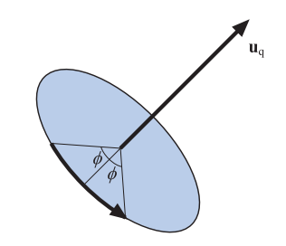
图4.9：通过使用一个单位四元数 \mathbf{q} = (\sin \phi u_{q}+\cos \phi) 完成的旋转操作，绕轴 u_{q} 旋转了 2\phi 。
《Real-Time Rendering》第 4 版，© CRC Press · 官方图集
任意非零倍数的q ^ \mathbf{\hat{q}} q ^ q ^ \mathbf{\hat{q}} q ^ − q ^ -\mathbf{\hat{q}} − q ^ u q \mathbf{u}_{q} u q q w q_w q w q ^ \mathbf{\hat{q}} q ^ ϕ \phi ϕ − q ^ -\mathbf{\hat{q}} − q ^ ϕ \phi ϕ 2 ϕ 2\phi 2 ϕ q ^ \mathbf{\hat{q}} q ^ − q ^ -\mathbf{\hat{q}} − q ^
给定两个单位四元数q ^ \mathbf{\hat{q}} q ^ r ^ \mathbf{\hat{r}} r ^ p ^ \mathbf{\hat{p}} p ^ q ^ \mathbf{\hat{q}} q ^ r ^ \mathbf{\hat{r}} r ^
r ^ ( q ^ p ^ q ^ ∗ ) r ^ ∗ = ( r ^ q ^ ) p ^ ( r ^ q ^ ) ∗ = c ^ p ^ c ^ ∗ (4.44) \hat{\mathbf{r}}\left(\hat{\mathbf{q}} \hat{\mathbf{p}} \hat{\mathbf{q}}^{*}\right) \hat{\mathbf{r}}^{*}=
(\hat{\mathbf{r}} \hat{\mathbf{q}}) \hat{\mathbf{p}}(\hat{\mathbf{r}} \hat{\mathbf{q}})^{*}
=
\hat{\mathbf{c}} \hat{\mathbf{p}} \hat{\mathbf{c}}^{*}
\tag{4.44} r ^ ( q ^ p ^ q ^ ∗ ) r ^ ∗ = ( r ^ q ^ ) p ^ ( r ^ q ^ ) ∗ = c ^ p ^ c ^ ∗ ( 4.44 ) 上述公式中的c ^ = r ^ q ^ \hat{\mathbf{c}}=\hat{\mathbf{r}} \hat{\mathbf{q}} c ^ = r ^ q ^ q ^ \mathbf{\hat{q}} q ^ r ^ \mathbf{\hat{r}} r ^
矩阵转换#
很多时候我们需要将好几种不同的变换组合在一起，这些变换大多数都以矩阵的形式给出，因此我们需要一种方法来将方程4.43中的四元数旋转，转换为矩阵形式。一个四元数q ^ \mathbf{\hat{q}} q ^ M q \mathbf{M^q} M q
M q = ( 1 − s ( q y 2 + q z 2 ) s ( q x q y − q w q z ) s ( q x q z + q w q y ) 0 s ( q x q y + q w q z ) 1 − s ( q x 2 + q z 2 ) s ( q y q z − q w q x ) 0 s ( q x q z − q w q y ) s ( q y q z + q w q x ) 1 − s ( q x 2 + q y 2 ) 0 0 0 0 1 ) (4.45) \mathbf{M}^{q}=\left(\begin{array}{cccc}1-s\left(q_{y}^{2}+q_{z}^{2}\right) & s\left(q_{x} q_{y}-q_{w} q_{z}\right) & s\left(q_{x} q_{z}+q_{w} q_{y}\right) & 0 \\ s\left(q_{x} q_{y}+q_{w} q_{z}\right) & 1-s\left(q_{x}^{2}+q_{z}^{2}\right) & s\left(q_{y} q_{z}-q_{w} q_{x}\right) & 0 \\ s\left(q_{x} q_{z}-q_{w} q_{y}\right) & s\left(q_{y} q_{z}+q_{w} q_{x}\right) & 1-s\left(q_{x}^{2}+q_{y}^{2}\right) & 0 \\ 0 & 0 & 0 & 1\end{array}\right)
\tag{4.45} M q = 1 − s ( q y 2 + q z 2 ) s ( q x q y + q w q z ) s ( q x q z − q w q y ) 0 s ( q x q y − q w q z ) 1 − s ( q x 2 + q z 2 ) s ( q y q z + q w q x ) 0 s ( q x q z + q w q y ) s ( q y q z − q w q x ) 1 − s ( q x 2 + q y 2 ) 0 0 0 0 1 ( 4.45 ) 上述方程中的s = 2 / ( n ( q ^ ) ) 2 s=2 /(n(\hat{\mathbf{q}}))^{2} s = 2/ ( n ( q ^ ) ) 2
M q = ( 1 − 2 ( q y 2 + q z 2 ) 2 ( q x q y − q w q z ) 2 ( q x q z + q w q y ) 0 2 ( q x q y + q w q z ) 1 − 2 ( q x 2 + q z 2 ) 2 ( q y q z − q w q x ) 0 2 ( q x q z − q w q y ) 2 ( q y q z + q w q x ) 1 − 2 ( q x 2 + q y 2 ) 0 0 0 0 1 ) (4.46) \mathbf{M}^{q}=\left(\begin{array}{cccc}1-2\left(q_{y}^{2}+q_{z}^{2}\right) & 2\left(q_{x} q_{y}-q_{w} q_{z}\right) & 2\left(q_{x} q_{z}+q_{w} q_{y}\right) & 0 \\ 2\left(q_{x} q_{y}+q_{w} q_{z}\right) & 1-2\left(q_{x}^{2}+q_{z}^{2}\right) & 2\left(q_{y} q_{z}-q_{w} q_{x}\right) & 0 \\ 2\left(q_{x} q_{z}-q_{w} q_{y}\right) & 2\left(q_{y} q_{z}+q_{w} q_{x}\right) & 1-2\left(q_{x}^{2}+q_{y}^{2}\right) & 0 \\ 0 & 0 & 0 & 1\end{array}\right)
\tag{4.46} M q = 1 − 2 ( q y 2 + q z 2 ) 2 ( q x q y + q w q z ) 2 ( q x q z − q w q y ) 0 2 ( q x q y − q w q z ) 1 − 2 ( q x 2 + q z 2 ) 2 ( q y q z + q w q x ) 0 2 ( q x q z + q w q y ) 2 ( q y q z − q w q x ) 1 − 2 ( q x 2 + q y 2 ) 0 0 0 0 1 ( 4.46 ) 当我们完成这个四元数的构建，在将其转换为矩阵形式的时候，上述转换方程中不包含任何三角函数运算，因此这个转换在实际应用中是很高效的。
将一个正交矩阵M q \mathbf{M^q} M q q ^ \mathbf{\hat{q}} q ^ M q \mathbf{M^q} M q
m 21 q − m 12 q = 4 q w q x m 02 q − m 20 q = 4 q w q y m 10 q − m 01 q = 4 q w q z . (4.47) \begin{array}{l}m_{21}^{q}-m_{12}^{q}=4 q_{w} q_{x} \\ m_{02}^{q}-m_{20}^{q}=4 q_{w} q_{y} \\ m_{10}^{q}-m_{01}^{q}=4 q_{w} q_{z} .\end{array}
\tag{4.47} m 21 q − m 12 q = 4 q w q x m 02 q − m 20 q = 4 q w q y m 10 q − m 01 q = 4 q w q z . ( 4.47 ) 方程4.47中的每一项都含有q w q_w q w q w q_w q w v q \mathbf{v}_q v q q ^ \mathbf{\hat{q}} q ^ q w q_w q w M q \mathbf{M^q} M q
tr ( M q ) = 4 − 2 s ( q x 2 + q y 2 + q z 2 ) = 4 ( 1 − q x 2 + q y 2 + q z 2 q x 2 + q y 2 + q z 2 + q w 2 ) = 4 q w 2 q x 2 + q y 2 + q z 2 + q w 2 = 4 q w 2 ( n ( q ^ ) ) 2 . (4.48) \begin{aligned} \operatorname{tr}\left(\mathbf{M}^{q}\right) & =4-2 s\left(q_{x}^{2}+q_{y}^{2}+q_{z}^{2}\right)=4\left(1-\frac{q_{x}^{2}+q_{y}^{2}+q_{z}^{2}}{q_{x}^{2}+q_{y}^{2}+q_{z}^{2}+q_{w}^{2}}\right) \\ & =\frac{4 q_{w}^{2}}{q_{x}^{2}+q_{y}^{2}+q_{z}^{2}+q_{w}^{2}}=\frac{4 q_{w}^{2}}{(n(\hat{\mathbf{q}}))^{2}} .\end{aligned}
\tag{4.48} tr ( M q ) = 4 − 2 s ( q x 2 + q y 2 + q z 2 ) = 4 ( 1 − q x 2 + q y 2 + q z 2 + q w 2 q x 2 + q y 2 + q z 2 ) = q x 2 + q y 2 + q z 2 + q w 2 4 q w 2 = ( n ( q ^ ) ) 2 4 q w 2 . ( 4.48 ) 我们通过方程4.48求出矩阵M q \mathbf{M^q} M q q w q_w q w
q w = 1 2 tr ( M q ) , q x = m 21 q − m 12 q 4 q w , q y = m 02 q − m 20 q 4 q w , q z = m 10 q − m 01 q 4 q w . (4.49) \begin{array}{ll}q_{w}=\frac{1}{2} \sqrt{\operatorname{tr}\left(\mathbf{M}^{q}\right)}, & q_{x}=\dfrac{m_{21}^{q}-m_{12}^{q}}{4 q_{w}}, \\[3mm] q_{y}=\dfrac{m_{02}^{q}-m_{20}^{q}}{4 q_{w}}, & q_{z}=\dfrac{m_{10}^{q}-m_{01}^{q}}{4 q_{w}} .\end{array}
\tag{4.49} q w = 2 1 tr ( M q ) , q y = 4 q w m 02 q − m 20 q , q x = 4 q w m 21 q − m 12 q , q z = 4 q w m 10 q − m 01 q . ( 4.49 ) 为了在计算过程中保持数值稳定[1634]，我们应当尽可能地避免除以一个过小的数值。为了实现这个目的，我们首先设t = q w 2 − q x 2 − q y 2 − q z 2 t=q_{w}^{2}-q_{x}^{2}-q_{y}^{2}-q_{z}^{2} t = q w 2 − q x 2 − q y 2 − q z 2 q x 2 + q y 2 + q z 2 + q w 2 = 1 q_{x}^{2}+q_{y}^{2}+q_{z}^{2}+q_{w}^{2} = 1 q x 2 + q y 2 + q z 2 + q w 2 = 1
m 00 = t + 2 q x 2 , m 11 = t + 2 q y 2 , m 22 = t + 2 q z 2 , u = m 00 + m 11 + m 22 = t + 2 q w 2 , (4.50) \begin{aligned}
m_{00} &=t+2 q_{x}^{2}, \\ m_{11} &=t+2 q_{y}^{2}, \\ m_{22} &=t+2 q_{z}^{2}, \\ u &=m_{00}+m_{11}+m_{22}=t+2 q_{w}^{2},
\end{aligned}
\tag{4.50} m 00 m 11 m 22 u = t + 2 q x 2 , = t + 2 q y 2 , = t + 2 q z 2 , = m 00 + m 11 + m 22 = t + 2 q w 2 , ( 4.50 ) 上述方程反过来意味着，m 00 , m 11 , m 22 , u m_{00}, m_{11}, m_{22},u m 00 , m 11 , m 22 , u q w , q x , q y , q z q_{w},q_{x},q_{y},q_{z} q w , q x , q y , q z q w q_w q w q w q_w q w
4 q x 2 = + m 00 − m 11 − m 22 + m 33 , 4 q y 2 = − m 00 + m 11 − m 22 + m 33 , 4 q z 2 = − m 00 − m 11 + m 22 + m 33 , 4 q w 2 = tr ( M q ) . (4.51) \begin{aligned}
4 q_{x}^{2}&=+m_{00}-m_{11}-m_{22}+m_{33},\\
4 q_{y}^{2}&=-m_{00}+m_{11}-m_{22}+m_{33},\\
4 q_{z}^{2}&=-m_{00}-m_{11}+m_{22}+m_{33},\\
4 q_{w}^{2}&=\operatorname{tr}\left(\mathbf{M}^{q}\right).
\end{aligned}
\tag{4.51} 4 q x 2 4 q y 2 4 q z 2 4 q w 2 = + m 00 − m 11 − m 22 + m 33 , = − m 00 + m 11 − m 22 + m 33 , = − m 00 − m 11 + m 22 + m 33 , = tr ( M q ) . ( 4.51 ) 总而言之，方程4.50可以用来计算四元数虚部分量q x , q y , q z q_{x},q_{y},q_{z} q x , q y , q z q ^ \mathbf{\hat{q}} q ^
球面线性插值#
球面线性插值（spherical linear interpolation）是指，给定两个单位四元数q ^ \mathbf{\hat{q}} q ^ r ^ \mathbf{\hat{r}} r ^ t ∈ [ 0 , 1 ] t \in [0,1] t ∈ [ 0 , 1 ]
球面线性插值的数学表达式如下：
s ^ ( q ^ , r ^ , t ) = ( r ^ q ^ − 1 ) t q ^ (4.52) \hat{\mathbf{s}}(\hat{\mathbf{q}}, \hat{\mathbf{r}}, t)=\left(\hat{\mathbf{r}} \hat{\mathbf{q}}^{-1}\right)^{t} \hat{\mathbf{q}}
\tag{4.52} s ^ ( q ^ , r ^ , t ) = ( r ^ q ^ − 1 ) t q ^ ( 4.52 ) 但是，对于软件实现而言，通常会使用更为合适的slerp函数来代表球面线性插值，其形式如下：
s ^ ( q ^ , r ^ , t ) = slerp ( q ^ , r ^ , t ) = sin ( ϕ ( 1 − t ) ) sin ϕ q ^ + sin ( ϕ t ) sin ϕ r ^ (4.53) \hat{\mathbf{s}}(\hat{\mathbf{q}}, \hat{\mathbf{r}}, t)
=\operatorname{slerp}(\hat{\mathbf{q}}, \hat{\mathbf{r}}, t)
=\frac{\sin (\phi(1-t))}{\sin \phi} \hat{\mathbf{q}}
+\frac{\sin (\phi t)}{\sin \phi} \hat{\mathbf{r}}
\tag{4.53} s ^ ( q ^ , r ^ , t ) = slerp ( q ^ , r ^ , t ) = sin ϕ sin ( ϕ ( 1 − t )) q ^ + sin ϕ sin ( ϕt ) r ^ ( 4.53 ) 其中cos ϕ = q x r x + q y r y + q z r z + q w r w \cos \phi=q_{x} r_{x}+q_{y} r_{y}+q_{z} r_{z}+q_{w} r_{w} cos ϕ = q x r x + q y r y + q z r z + q w r w t ∈ [ 0 , 1 ] t \in [0,1] t ∈ [ 0 , 1 ] q ^ \mathbf{\hat{q}} q ^ r ^ \mathbf{\hat{r}} r ^ q ^ ( t = 0 ) \mathbf{\hat{q}}(t=0) q ^ ( t = 0 ) r ^ ( t = 1 ) \mathbf{\hat{r}}(t=1) r ^ ( t = 1 ) q ^ \mathbf{\hat{q}} q ^ r ^ \mathbf{\hat{r}} r ^ t t t
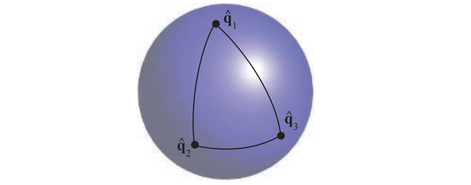
图4.10：单位四元数可以表示为单位球面（实际上是一个四维空间中的超球，投影到了三维空间中）上的点。slerp函数用于对两个四元数进行插值，插值形成的路径是球面上的一段圆弧。需要注意的是，从 \mathbf{q}_1 插值到 \mathbf{q}_2 ，与从 \mathbf{q}_1 插值到 \mathbf{q}_3 ，再插值到 \mathbf{q}_2 并不是一回事。虽然它们插值的起点和终点是相同的，但是中间具体的路径和方向是不同的。
《Real-Time Rendering》第 4 版，© CRC Press · 官方图集
slerp函数非常适合用于在两个方向之间进行插值，这个插值过程会围绕一个固定的旋转轴，且旋转速度是恒定的；而在使用欧拉角进行方向插值的时候则并不是这样的（旋转轴不固定，旋转速度也不恒定）。在实际实现中，由于slerp函数中涉及到了很多三角函数的计算，因此效率是很低的。Malyshau [1114]讨论了如何将四元数集成到渲染管线中，他指出：当直接在像素着色器中对四元数进行归一化，而不是使用slerp函数时，在90度角的情况下，三角形的最大方位误差为4度，这个误差在光栅化三角形的时候是可以接受的。Li [1039, 1040]提供了一种效率更高的增量方法来计算slerp，并且不会对精度产生任何影响。Eberly [406]提出了一种仅使用加法和乘法来快速计算slerp的方法。
当现在有两个以上的方向时，例如q ^ 0 , q ^ 1 , … , q ^ n − 1 \hat{\mathbf{q}}_{0}, \hat{\mathbf{q}}_{1}, \ldots, \hat{\mathbf{q}}_{n-1} q ^ 0 , q ^ 1 , … , q ^ n − 1 q ^ 1 \mathbf{\hat{q}}_1 q ^ 1 q ^ 2 \mathbf{\hat{q}}_2 q ^ 2 q ^ 3 \mathbf{\hat{q}}_3 q ^ 3 q ^ n − 1 \hat{\mathbf{q}}_{n-1} q ^ n − 1 q ^ i − 1 \hat{\mathbf{q}}_{i-1} q ^ i − 1 q ^ i \hat{\mathbf{q}}_{i} q ^ i q ^ i \hat{\mathbf{q}}_{i} q ^ i q ^ i − 1 \hat{\mathbf{q}}_{i-1} q ^ i − 1 q ^ i \hat{\mathbf{q}}_{i} q ^ i q ^ i + 1 \hat{\mathbf{q}}_{i+1} q ^ i + 1 q ^ i \hat{\mathbf{q}}_{i} q ^ i q ^ i + 1 \hat{\mathbf{q}}_{i+1} q ^ i + 1
一个更好的方法是使用某种样条线来进行插值。我们在四元数q ^ i \hat{\mathbf{q}}_{i} q ^ i q ^ i + 1 \hat{\mathbf{q}}_{i+1} q ^ i + 1 a ^ i \hat{\mathbf{a}}_{i} a ^ i a ^ i + 1 \hat{\mathbf{a}}_{i+1} a ^ i + 1 q ^ i , a ^ i , a ^ i + 1 , q ^ i + 1 \hat{\mathbf{q}}_{i},\hat{\mathbf{a}}_{i},\hat{\mathbf{a}}_{i+1},\hat{\mathbf{q}}_{i+1} q ^ i , a ^ i , a ^ i + 1 , q ^ i + 1
a ^ i = q ^ i exp [ − log ( q ^ i − 1 q ^ i − 1 ) + log ( q ^ i − 1 q ^ i + 1 ) 4 ] . (4.54) \hat{\mathbf{a}}_{i}=
\hat{\mathbf{q}}_{i} \exp \left[-\frac{\log \left(\hat{\mathbf{q}}_{i}^{-1} \hat{\mathbf{q}}_{i-1}\right)+\log \left(\hat{\mathbf{q}}_{i}^{-1}
\hat{\mathbf{q}}_{i+1}\right)}{4}\right].
\tag{4.54} a ^ i = q ^ i exp [ − 4 log ( q ^ i − 1 q ^ i − 1 ) + log ( q ^ i − 1 q ^ i + 1 ) ] . ( 4.54 ) 我们将使用q ^ i , a ^ i \hat{\mathbf{q}}_{i},\hat{\mathbf{a}}_{i} q ^ i , a ^ i
s q u a d ( q ^ i , q ^ i + 1 , a ^ i , a ^ i + 1 , t ) = s l e r p ( s l e r p ( q ^ i , q ^ i + 1 , t ) , s l e r p ( a ^ i , a ^ i + 1 , t ) , 2 t ( 1 − t ) ) (4.55) \mathbf{squad}\left(\hat{\mathbf{q}}_{i}, \hat{\mathbf{q}}_{i+1}, \hat{\mathbf{a}}_{i}, \hat{\mathbf{a}}_{i+1}, t\right)=\\
\mathbf{slerp}\left(
\mathbf{slerp}\left(\hat{\mathbf{q}}_{i},
\hat{\mathbf{q}}_{i+1}, t\right),
\mathbf{slerp}\left(\hat{\mathbf{a}}_{i},
\hat{\mathbf{a}}_{i+1}, t\right), 2 t(1-t)
\right)
\tag{4.55} squad ( q ^ i , q ^ i + 1 , a ^ i , a ^ i + 1 , t ) = slerp ( slerp ( q ^ i , q ^ i + 1 , t ) , slerp ( a ^ i , a ^ i + 1 , t ) , 2 t ( 1 − t ) ) ( 4.55 ) 从上述方程中我们可以看到，s q u a d \mathbf{squad} squad q ^ i \hat{\mathbf{q}}_{i} q ^ i a ^ i \hat{\mathbf{a}}_{i} a ^ i
将一个向量旋转到另一个向量#
一个常见的操作是将方向s \mathbf{s} s t \mathbf{t} t s \mathbf{s} s t \mathbf{t} t u = ( s × t ) / ∥ s × t ∥ \mathbf{u}=(\mathbf{s} \times \mathbf{t}) /\|\mathbf{s} \times \mathbf{t}\| u = ( s × t ) /∥ s × t ∥ s \mathbf{s} s t \mathbf{t} t e = s ⋅ t = cos ( 2 ϕ ) ， ∥ s × t ∥ = sin ( 2 ϕ ) e=\mathbf{s} \cdot \mathbf{t}=\cos (2 \phi) ， \|\mathbf{s} \times \mathbf{t}\|=\sin (2 \phi) e = s ⋅ t = cos ( 2 ϕ ) ， ∥ s × t ∥ = sin ( 2 ϕ ) 2 ϕ 2 \phi 2 ϕ s \mathbf{s} s t \mathbf{t} t s \mathbf{s} s t \mathbf{t} t q ^ = ( sin ϕ u , cos ϕ ) \hat{\mathbf{q}}=(\sin \phi \mathbf{u}, \cos \phi) q ^ = ( sin ϕ u , cos ϕ ) q ^ = ( sin ϕ sin 2 ϕ ( s × t ) , cos ϕ ) \hat{\mathbf{q}}=\left(\frac{\sin \phi}{\sin 2 \phi}(\mathbf{s} \times \mathbf{t}), \cos \phi\right) q ^ = ( s i n 2 ϕ s i n ϕ ( s × t ) , cos ϕ ) cos ϕ = e + 1 2 \cos \phi=\sqrt{\frac{e+1}{2}} cos ϕ = 2 e + 1
q ^ = ( q v , q w ) = ( 1 2 ( 1 + e ) ( s × t ) , 2 ( 1 + e ) 2 ) (4.56) \hat{\mathbf{q}}=
\left(\mathbf{q}_{v}, q_{w}\right)
=\left(
\frac{1}{\sqrt{2(1+e)}}(\mathbf{s} \times \mathbf{t}),
\frac{\sqrt{2(1+e)}}{2}
\right)
\tag{4.56} q ^ = ( q v , q w ) = ( 2 ( 1 + e ) 1 ( s × t ) , 2 2 ( 1 + e ) ) ( 4.56 ) 使用这种方式构建四元数（相比于对叉积s × t \mathbf{s} \times \mathbf{t} s × t s \mathbf{s} s t \mathbf{t} t s \mathbf{s} s t \mathbf{t} t e = − 1 e=-1 e = − 1 s \mathbf{s} s s \mathbf{s} s t \mathbf{t} t
有时我们可能会需要一个表示s \mathbf{s} s t \mathbf{t} t
R ( s , t ) = ( e + h v x 2 h v x v y − v z h v x v z + v y 0 h v x v y + v z e + h v y 2 h v y v z − v x 0 h v x v z − v y h v y v z + v x e + h v z 2 0 0 0 0 1 ) (4.57) \mathbf{R}(\mathbf{s}, \mathbf{t})=\left(\begin{array}{cccc}e+h v_{x}^{2} & h v_{x} v_{y}-v_{z} & h v_{x} v_{z}+v_{y} & 0 \\ h v_{x} v_{y}+v_{z} & e+h v_{y}^{2} & h v_{y} v_{z}-v_{x} & 0 \\ h v_{x} v_{z}-v_{y} & h v_{y} v_{z}+v_{x} & e+h v_{z}^{2} & 0 \\ 0 & 0 & 0 & 1\end{array}\right)
\tag{4.57} R ( s , t ) = e + h v x 2 h v x v y + v z h v x v z − v y 0 h v x v y − v z e + h v y 2 h v y v z + v x 0 h v x v z + v y h v y v z − v x e + h v z 2 0 0 0 0 1 ( 4.57 ) 在这个计算过程中，会使用到以下的中间计算过程：
v = s × t e = cos ( 2 ϕ ) = s ⋅ t , h = 1 − cos ( 2 ϕ ) sin 2 ( 2 ϕ ) = 1 − e v ⋅ v = 1 1 + e . (4.58) \begin{aligned}
\mathbf{v} &=\mathbf{s} \times \mathbf{t} \\
e &=\cos (2 \phi)=\mathbf{s} \cdot \mathbf{t}, \\
h &
=\frac{1-\cos (2 \phi)}{\sin ^{2}(2 \phi)}
=\frac{1-e}{\mathbf{v} \cdot \mathbf{v}}
=\frac{1}{1+e} .
\end{aligned}
\tag{4.58} v e h = s × t = cos ( 2 ϕ ) = s ⋅ t , = sin 2 ( 2 ϕ ) 1 − cos ( 2 ϕ ) = v ⋅ v 1 − e = 1 + e 1 . ( 4.58 ) 我们可以看到，通过对方程进行简化，我们避免了平方根运算和三角函数运算，因此这是一种效率很高的计算方式。请注意方程4.57（使用四元数将一个向量旋转到另一个向量）和方程4.30（使用欧拉变换将一个向量旋转到另一个向量），二者的结构是类似的，但是使用四元数变换的方程4.57中，并没有涉及对三角函数的计算，因此其效率更高。
当向量s \mathbf{s} s t \mathbf{t} t ∥ s × t ∥ ≈ 0 \|\mathbf{s} \times \mathbf{t}\| \approx 0 ∥ s × t ∥ ≈ 0 ϕ ≈ 0 \phi \approx 0 ϕ ≈ 0 2 ϕ ≈ π 2 \phi \approx \pi 2 ϕ ≈ π π \pi π s \mathbf{s} s s \mathbf{s} s
4.4 顶点混合#
想象现在有一个数字人的手臂，他由两部分组成，分别是前臂和上臂，这个模型可以使用刚体变换（章节4.1.6）来进行动画处理，如图4.11左半边所示。但是这两部分之间的关节并不像一个真正的手臂肘关节，这是因为我们使用了两个独立的子模型，即这个肘关节由两个独立模型的重叠部分所组成。这个由静态模型组合而成的物体，并没有解决如何使得关节灵活柔韧（flexible）的问题，很明显，使用一个单独的物体进行动画处理，可以获得更好的效果。
顶点混合（vertex blending）是一种解决这个问题的常见方法[1037, 1903]，它还有几个其他的名称，例如：线性蒙皮混合（linear-blend skinning）、包络（enveloping）或者骨架子空间变形（skeleton-subspace deformation）。虽然该算法的确切来源尚不清楚，但是定义骨骼，并让模型皮肤随着骨骼的变化产生相应的反应则是计算机动画中的基本概念[1100]。在最简单的形式中，数字人的前臂和上臂可以像以前一样分别进行动画处理，但是在关节处，这两个独立的部分会通过一个具有弹性的“皮肤（skin）”连接起来。这部分皮肤由两组不同的顶点组成，其中一部分顶点由前臂的变换矩阵所驱动，另一部分顶点则被上臂的变换矩阵所驱动。这意味着位于关节处的“皮肤”，其三角形顶点不再使用统一的矩阵进行变换，而是每个三角形都使用不同的矩阵来进行变换，如图4.11所示。
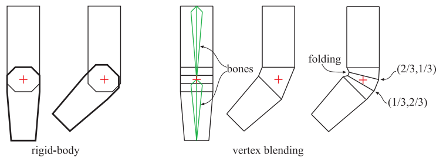
图4.11：左侧的手臂由前臂和上臂两部分组成，并使用了刚体变换进行动画处理，其关节处表现的并不是很真实自然。在右侧，对整个手臂模型使用了顶点混合方法。其中，位于中间的手臂展示了，当一个连接两部分的简单皮肤直接覆盖在肘关节时会发生什么。最右侧的手臂展示了使用顶点混合进行处理的结果，其中一些顶点使用了不同的权重进行混合： (2/3,1/3) 意味着应用在该顶点上的变换有 2/3 来自上臂，有 1/3 来自前臂。在最右侧的图中，还展示了使用顶点混合的一个缺点，即可以看见肘关节内部的折叠。我们还可以使用更多的骨骼节点，以及更加合理的权重选择来获得更好的动画效果。
《Real-Time Rendering》第 4 版，© CRC Press · 官方图集
更进一步说，我们可以允许单个顶点被若干个不同的矩阵所变换，并将这些变换所得到的结果加权混合在一起。这是通过为动画物体设置一个骨架来完成的，通过用户自定义的权重，每个骨骼的变换都可能会对其他的顶点产生影响。由于整个手臂都可能是“有弹性的”，也就是说，所有的顶点都可能会受到多个矩阵变换的影响，因此也可以将整个网格模型称作为包裹骨骼的蒙皮（skin），如图4.12所示。许多商业化的建模软件都具有这样的骨架-骨骼建模功能，尽管名字中含有骨骼，但是这个骨骼也不一定是刚性的。例如：Mohr和Gleicher [1230]提出了一种想法，可以通过增加额外关节的方法，来实现诸如肌肉膨胀的效果。James和Twigg [813]讨论了如何使用可拉伸与可挤压骨骼来进行动画蒙皮。
顶点混合的数学表达式如方程4.59所示，其中p \mathbf{p} p u ( t ) \mathbf{u}(t) u ( t ) t t t
u ( t ) = ∑ i = 0 n − 1 w i B i ( t ) M i − 1 p , where ∑ i = 0 n − 1 w i = 1 , w i ≥ 0 (4.59) \mathbf{u}(t)=
\sum_{i=0}^{n-1} w_{i} \mathbf{B}_{i}(t) \mathbf{M}_{i}^{-1} \mathbf{p},\ \text{ where} \quad \sum_{i=0}^{n-1} w_{i}=1, \quad w_{i} \geq 0
\tag{4.59} u ( t ) = i = 0 ∑ n − 1 w i B i ( t ) M i − 1 p , where i = 0 ∑ n − 1 w i = 1 , w i ≥ 0 ( 4.59 ) 上述方程的含义是：有n n n p \mathbf{p} p w i w_i w i i i i p \mathbf{p} p M i \mathbf{M}_{i} M i i i i B i ( t ) \mathbf{B}_{i}(t) B i ( t ) i i i
Woodland对一种维护和更新动画矩阵B i ( t ) \mathbf{B}_{i}(t) B i ( t ) M i \mathbf{M}_{i} M i B i ( t ) \mathbf{B}_{i}(t) B i ( t ) M i \mathbf{M}_{i} M i
实际上，矩阵B i ( t ) \mathbf{B}_{i}(t) B i ( t ) M i − 1 \mathbf{M}_{i}^{-1} M i − 1 p \mathbf{p} p w i w_i w i p \mathbf{p} p t t t u \mathbf{u} u B i ( t ) M i − 1 p , i = 0 ⋯ n − 1 \mathbf{B}_{i}(t) \mathbf{M}_{i}^{-1} \mathbf{p},\quad i = 0 \cdots n-1 B i ( t ) M i − 1 p , i = 0 ⋯ n − 1 B i ( t ) M i − 1 \mathbf{B}_{i}(t) \mathbf{M}_{i}^{-1} B i ( t ) M i − 1
顶点混合非常适合在GPU上运行，我们可以将网格中的顶点集合放入GPU的静态缓存中（只需要发送一次），之后重复使用这个缓存即可。在每一帧中，只有骨骼节点发生了变化（顶点数量和连接关系不会发生变化，即GPU上的静态缓存也不会发生变化），我们使用一个顶点着色器，来计算骨骼节点对缓存中存储网格的影响。通过这种方式，可以最大程度的减少在CPU上进行的处理，以及与GPU之间的数据传输（会带来大量延迟），这使得GPU可以高效地渲染这个网格。最简单的情况是可以同时使用模型的整套骨骼矩阵，否则的话就需要拆分模型，并复制一些骨骼。还可以将骨骼的变换存储在顶点可以访问的纹理中，从而避免触及寄存器的限制。通过使用四元数来表示旋转变换，那么每个变换都可以被存储在两张纹理中[1639]（一张存储顶点的位置，一张存储用于旋转的单位四元数）。如果可以使用无序访问视图（UAV）的话，还可以对蒙皮的动画结果进行重复使用[146]。
我们还可以指定超出[ 0 , 1 ] [0,1] [ 0 , 1 ]
我们刚才介绍的是最基础的顶点混合算法，它当然会存在一些缺点，例如我们不希望出现的折叠、扭曲或者是自相交等现象[1037]，如图4.13所示。一个更好的方案是使用双四元数混合（dual quaternion）[872, 873]，这个技术可以让蒙皮保持原始形状的刚性，从而避免四肢出现像“糖纸”一样的扭曲；这个技术的效果良好，并且计算成本小于线性蒙皮混合的1.5倍，因此被广泛采用。但是双四元数混合技术会导致蒙皮发生膨胀，Le和Hodings [1001]提出了旋转中心蒙皮（center-of-rotation）作为双四元数的替代，他们认为：局部变换应当是一种刚体变换，并且具有相似权重w i w_i w i
4.5 变形#
在动画中，从一个三维模型变形到另一个三维模型是非常有用的[28, 883, 1000, 1005]。假设在t 0 t_0 t 0 t 1 t_1 t 1 t 0 t_0 t 0 t 1 t_1 t 1
变形主要会涉及到两个问题：顶点对应（vertex correspondence）问题和插值（interpolation）问题。给定两个任意的模型，它们具有不同的拓扑结构，不同数量的顶点以及不同的网格连通性。我们通常要从设置两个模型顶点之间的对应关系开始，这是一个十分困难的问题，但是在这个领域中，也已经有很多相关的研究了。我们建议感兴趣的读者可以参考Alexa的相关调研[28]。
如果两个模型之间已经有了一一对应的顶点了，即对于第一个模型中的每个顶点，我们都可以在第二个模型中找到唯一相对应的顶点。这种情况下的变形操作是很简单的，我们只需要在对应的顶点属性之间进行插值就可以获得中间数据了，例如直接使用线性插值（章节17.1中介绍了更多的插值方法）。对于t ∈ [ t 0 , t 1 ] t \in [t_0,t_1] t ∈ [ t 0 , t 1 ] s = ( t − t 0 ) / ( t 1 − t 0 ) s=\left(t-t_{0}\right) /\left(t_{1}-t_{0}\right) s = ( t − t 0 ) / ( t 1 − t 0 ) t t t
m = ( 1 − s ) p 0 + s p 1 , (4.60) \mathbf{m}=(1-s) \mathbf{p}_{0}+s \mathbf{p}_{1},
\tag{4.60} m = ( 1 − s ) p 0 + s p 1 , ( 4.60 ) 其中p 0 \mathbf{p}_{0} p 0 p 1 \mathbf{p}_{1} p 1 t 0 , t 1 t_0,t_1 t 0 , t 1
变形目标（morph target）或者形状混合（blend shape）[907]是变形技术的其中一种，用户可以对其进行更加直观的控制，图4.15展示了其基本思想。
图4.15：给定两个嘴巴的姿态，可以计算一组差分向量，用于控制插值。在变形目标中，我们可以通过调整差分向量的权重，从而在中性面部（标准面部姿态，类似于T Pose）上“添加”运动。在这个例子中，当权重为正的时候，我们可以获得一个嘴角上扬的笑脸；当权重为负的时候，我们可以获得一个相反的结果，即嘴角下垂的哭脸。
《Real-Time Rendering》第 4 版，© CRC Press · 官方图集
我们从一个标准的中性模型（neutral model）开始，在这个例子中，这个中性模型是一个没有表情的脸，我们将其标记为N \mathcal{N} N k ≥ 1 k \ge 1 k ≥ 1 P i , i ∈ [ 1 , … , k ] \mathcal{P}_{i}, i \in[1, \ldots, k] P i , i ∈ [ 1 , … , k ] D i = P i − N \mathcal{D}_{i}=\mathcal{P}_{i}-\mathcal{N} D i = P i − N
此时我们有了一个中性模型以及一组不同姿态D i \mathcal{D}_{i} D i M \mathcal{M} M
M = N + ∑ i = 1 k w i D i (4.61) \mathcal{M}=\mathcal{N}+\sum_{i=1}^{k} w_{i} \mathcal{D}_{i}
\tag{4.61} M = N + i = 1 ∑ k w i D i ( 4.61 ) 我们在中性模型的基础上，通过使用不同的权重w i w_{i} w i w 1 = 1 w_{1}=1 w 1 = 1 w 1 = 0.5 w_{1}=0.5 w 1 = 0.5
对于这个简单的面部模型而言，我们还可以再添加一个带有“悲伤”眉毛的面部姿态，通过使用一个负数权重，从而获得一个“开心”的眉毛。由于这些顶点的位移都是可叠加且相互独立的，因此这个眉毛姿态可以和和嘴巴姿态同时使用。
变形目标是一个强大的技术，它为动画师提供了很多控制能力，因为模型中的不同特征，可以进行独立操控。Lewis等人[1037]介绍了姿态空间变形技术（pose-space deformation），该技术将顶点混合和变形目标结合在一起。Senior [1608]使用了预计算的顶点纹理来存储和检索目标姿态之间的位移。对于支持流式输出和顶点ID的硬件，允许在单个模型上使用多个变形目标，并在GPU上专门计算这个效果。此外，还可以使用一个低分辨率的网格，然后通过曲面细分和位移映射（displacement mapping）来生成一个高分辨率的网格，这样避免了在一个高分辨率模型上，对每个顶点进行蒙皮和处理的开销[1971]。
图4.16展示了一个同时使用蒙皮和变形的例子。Weronko和Andreason [1872]在《教团：1886》中使用了蒙皮和变形。
4.6 几何缓存回放#
在一些过场动画中，我们可能会希望使用一些极高质量的动画，这些高质量动画使用上述我们所提到的任何方法和技术都无法实时实现。一种简单的方法是，将所有帧的顶点数据预先计算并存储起来， 然后在游戏运行的时候，从磁盘上读取这些数据并对顶点进行更新。但是对于一个包含30000个顶点的模型而言，一段简单的动画可能就会占据50 MB/s的带宽。Gneiting [545]提供了若干种方法，可以将内存消耗降低到原来的10%，其具体做法如下：
首先会对数据进行量化处理，例如：使用16 位整数来存储每个顶点的位置和纹理坐标，这一步操作会损失一些精度和信息，因为这个压缩过程是不可逆的，在压缩之后无法恢复原始的数据。为了进一步对数据进行压缩，还使用了基于空域（spatial）和时域（temporal）的预测，并对这些差异信息（同一顶点的不同帧，同一帧中的相邻顶点）进行了编码。对于空域压缩而言，可以使用平行四边形预测（parallelogram prediction）技术[800]。对于三角形条带上的一个顶点，我们可以使用该顶点所在的三角形，以当前边为基准，将其反射到当前边的另一侧；这两个三角形构成了一个平行四边形，然后使用这个平行四边形来预测下一个顶点的位置，然后对原顶点和新顶点之间的差异进行编码。在良好预测的情况下，大多数差异数值都会接近于0，这对于许多压缩方案来说都是很理想的。与MPEG压缩类似，还可以在时域上进行预测，即每隔n n n n − 1 n-1 n − 1 n n n n + 1 n+1 n + 1
4.7 投影#
在真正渲染一个场景之前，场景中所有的相关物体都需要被投影到某个平面上，或者是某个简单空间中。在投影变换完成之后，才会进行裁剪操作和渲染操作（章节2.3）。
到目前为止，本章节中所涉及的诸多变换，并不会对齐次坐标的w w w w w w w w w ( 0 , 0 , 0 , 1 ) (0,0,0,1) ( 0 , 0 , 0 , 1 ) w w w w w w w w w w w w
在本小节中，我们假设在经过观察变换之后，相机会看向负z z z y y y x x x z z z
4.7.1 正交投影#
正交投影的一个特征是，投影之前的平行线，在投影之后仍然会保持平行。这也就意味着，当使用正交投影来观察一个场景的时候，无论场景中的物体距离相机多远，它们的大小都不会发生改变。矩阵P o \mathbf{P}_o P o x , y x,y x , y z z z z = 0 z=0 z = 0
P o = ( 1 0 0 0 0 1 0 0 0 0 0 0 0 0 0 1 ) (4.62) \mathbf{P}_{o}=
\left(\begin{array}{cccc}
1 & 0 & 0 & 0 \\ 0 & 1 & 0 & 0 \\ 0 & 0 & 0 & 0 \\ 0 & 0 & 0 & 1
\end{array}\right)
\tag{4.62} P o = 1 0 0 0 0 1 0 0 0 0 0 0 0 0 0 1 ( 4.62 ) 图4.17展示了正交投影的效果。由于矩阵P o \mathbf{P}_o P o z z z z z z x , y x,y x , y n n n f f f
图4.17：由 方程4.62 生成的简单正交投影，图中展示了这个过程的三个观察视图。这个投影可以看作是观察者沿着负 z 轴进行观察，这意味着这个投影操作实际上只是省略了（或者设置为零） z 坐标，同时保持 x 和 y 坐标不变。请注意，位于 平面 z = 0 两边的物体，都会被投影到投影平面上。
《Real-Time Rendering》第 4 版，© CRC Press · 官方图集
通常我们会使用一个六元组（l , r , b , t , n , f l, r, b, t, n, f l , r , b , t , n , f ( l , b , n ) (l, b, n) ( l , b , n ) ( r , t , f ) (r, t, f) ( r , t , f ) z z z n > f n > f n > f
在OpenGL中，这个轴对齐立方体的范围是从( − 1 , − 1 , − 1 ) (-1,-1,-1) ( − 1 , − 1 , − 1 ) ( 1 , 1 , 1 ) (1, 1, 1) ( 1 , 1 , 1 ) ( − 1 , − 1 , 0 ) (-1,-1,0) ( − 1 , − 1 , 0 ) ( 1 , 1 , 1 ) (1, 1, 1) ( 1 , 1 , 1 )
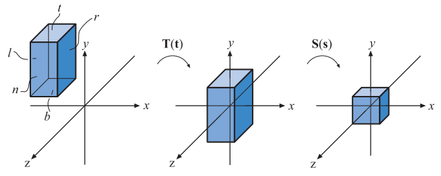
图4.18：将一个AABB转换为一个规则观察体。左侧图中的AABB首先会进行平移，使其几何中心位于原点处；然后再对AABB进行缩放，使其变成右图中的规则观察体。
《Real-Time Rendering》第 4 版，© CRC Press · 官方图集
在转换为规则观察体之后，需要渲染的几何体顶点会被这个立方体所裁剪。位于立方体内的几何体最终会被保留，然后通过屏幕映射的方式，将剩余的正方形区域渲染到屏幕上。详细的正交投影矩阵如下所示：
P o = S ( s ) T ( t ) = ( 2 r − l 0 0 0 0 2 t − b 0 0 0 0 2 f − n 0 0 0 0 1 ) ( 1 0 0 − l + r 2 0 1 0 − t + b 2 0 0 1 − f + n 2 0 0 0 1 ) = ( 2 r − l 0 0 − r + l r − l 0 2 t − b 0 − t + b t − b 0 0 2 f − n − f + n f − n 0 0 0 1 ) . (4.63) \begin{aligned}
\mathbf{P}_{o}=\mathbf{S}(\mathbf{s}) \mathbf{T}(\mathbf{t}) &=
\left(\begin{array}{cccc}
\dfrac{2}{r-l} & 0 & 0 & 0 \\
0 & \dfrac{2}{t-b} & 0 & 0 \\
0 & 0 & \dfrac{2}{f-n} & 0 \\
0 & 0 & 0 & 1
\end{array}\right)
\left(\begin{array}{cccc}
1 & 0 & 0 & -\dfrac{l+r}{2} \\
0 & 1 & 0 & -\dfrac{t+b}{2} \\
0 & 0 & 1 & -\dfrac{f+n}{2} \\
0 & 0 & 0 & 1
\end{array}\right) \\
&=\left(\begin{array}{cccc}
\dfrac{2}{r-l} & 0 & 0 & -\dfrac{r+l}{r-l} \\[2mm]
0 & \dfrac{2}{t-b} & 0 & -\dfrac{t+b}{t-b} \\[2mm]
0 & 0 & \dfrac{2}{f-n} & -\dfrac{f+n}{f-n} \\[2mm]
0 & 0 & 0 & 1\end{array}\right) .
\end{aligned}\tag{4.63} P o = S ( s ) T ( t ) = r − l 2 0 0 0 0 t − b 2 0 0 0 0 f − n 2 0 0 0 0 1 1 0 0 0 0 1 0 0 0 0 1 0 − 2 l + r − 2 t + b − 2 f + n 1 = r − l 2 0 0 0 0 t − b 2 0 0 0 0 f − n 2 0 − r − l r + l − t − b t + b − f − n f + n 1 . ( 4.63 ) 如方程4.63所示，整条投影矩阵P o \mathbf{P}_{o} P o T ( t ) \mathbf{T(t)} T ( t ) S ( s ) \mathbf{S(s)} S ( s )
s = ( 2 / ( r − l ) , 2 / ( t − b ) , 2 / ( f − n ) ) , t = ( − ( r + l ) / 2 , − ( t + b ) / 2 , − ( f + n ) / 2 ) \mathbf{s}=(2 /(r-l), 2 /(t-b), 2 /(f-n)),\\[2mm]
\mathbf{t}=(-(r+l) / 2,-(t+b) / 2,-(f+n) / 2) s = ( 2/ ( r − l ) , 2/ ( t − b ) , 2/ ( f − n )) , t = ( − ( r + l ) /2 , − ( t + b ) /2 , − ( f + n ) /2 ) 这个矩阵是可逆的，其逆矩阵为：
P o − 1 = T ( − t ) S ( ( r − l ) / 2 , ( t − b ) / 2 , ( f − n ) / 2 ) \mathbf{P}_{o}^{-1}=\mathbf{T}(-\mathbf{t}) \mathbf{S}((r-l) / 2,(t-b) / 2,(f-n) / 2) P o − 1 = T ( − t ) S (( r − l ) /2 , ( t − b ) /2 , ( f − n ) /2 )
当且仅当n ≠ f n \ne f n = f l ≠ r l \ne r l = r t ≠ b t \ne b t = b
在计算机图形学中，在投影变换之后通常会使用一个左手系，即视口的x x x y y y z z z z z z ( l , b , n ) (l, b, n) ( l , b , n ) ( − 1 , − 1 , 1 ) (-1,-1,1) ( − 1 , − 1 , 1 ) ( r , t , f ) (r, t, f) ( r , t , f ) ( 1 , 1 , − 1 ) (1, 1, -1) ( 1 , 1 , − 1 )
P o = ( 1 0 0 0 0 1 0 0 0 0 − 1 0 0 0 0 1 ) (4.64) \mathbf{P}_{o}=
\left(\begin{array}{cccc}
1 & 0 & 0 & 0 \\
0 & 1 & 0 & 0 \\
0 & 0 & -1 & 0 \\
0 & 0 & 0 & 1
\end{array}\right)
\tag{4.64} P o = 1 0 0 0 0 1 0 0 0 0 − 1 0 0 0 0 1 ( 4.64 ) 此时的正交投影矩阵是一个镜像变换矩阵，正是这个镜像操作会将右手系的观察空间（相机看向负z z z
OpenGL会将点坐标的深度值（z z z [ − 1 , 1 ] [-1,1] [ − 1 , 1 ] [ 0 , 1 ] [0,1] [ 0 , 1 ] [ − 1 , 1 ] [-1,1] [ − 1 , 1 ] [ − 0.5 , 0.5 ] [-0.5,0.5] [ − 0.5 , 0.5 ] z z z [ 0 , 1 ] [0,1] [ 0 , 1 ]
M s t = ( 1 0 0 0 0 1 0 0 0 0 0.5 0.5 0 0 0 1 ) (4.65) \mathbf{M}_{s t}=\left(\begin{array}{cccc}1 & 0 & 0 & 0 \\ 0 & 1 & 0 & 0 \\ 0 & 0 & 0.5 & 0.5 \\ 0 & 0 & 0 & 1\end{array}\right)
\tag{4.65} M s t = 1 0 0 0 0 1 0 0 0 0 0.5 0 0 0 0.5 1 ( 4.65 ) 现在我们将正交投影的变换矩阵，与这个对深度值进行缩放和平移的矩阵结合在一起，可以得到最终的正交投影变换矩阵，根据深度值映射的不同可能会有细微的区别，在DirectX中，这个矩阵的具体形式如下：
P o [ 0 , 1 ] = ( 2 r − l 0 0 − r + l r − l 0 2 t − b 0 − t + b t − b 0 0 1 f − n − n f − n 0 0 0 1 ) (4.66) \mathbf{P}_{o[0,1]}=
\left(\begin{array}{cccc}
\frac{2}{r-l} & 0 & 0 & -\frac{r+l}{r-l} \\[2mm]
0 & \frac{2}{t-b} & 0 & -\frac{t+b}{t-b} \\[2mm]
0 & 0 & \frac{1}{f-n} & -\frac{n}{f-n} \\[2mm]
0 & 0 & 0 & 1
\end{array}\right)
\tag{4.66} P o [ 0 , 1 ] = r − l 2 0 0 0 0 t − b 2 0 0 0 0 f − n 1 0 − r − l r + l − t − b t + b − f − n n 1 ( 4.66 ) 在DirectX中一般会使用这个矩阵的转置矩阵，因为DirectX使用了行优先（row-major）的规则来写入矩阵。
4.7.2 透视投影#
透视投影要比正交投影更加复杂，在计算机图形程序中也更加常用。在透视投影中，投影变换前的平行线在投影之后通常就不再平行了，相反，这些平行线可能会在它们的尽头汇聚成一个点。透视投影更加符合我们人眼观察这个世界的模式，因为它具有近大远小的特点。
首先我们先从最简单的情况开始，推导投影到z = − d , d > 0 z=-d,d>0 z = − d , d > 0
图4.19：上图是用于推导透视投影矩阵的几何符号。点 p 投影到平面 z=-d,d>0 上，最终生成一个新的顶点 q 。投影是从相机的角度执行的，在本例中相机位于原点。使用右图中的相似三角形，可以推导出点 q 的 x 分量。
《Real-Time Rendering》第 4 版，© CRC Press · 官方图集
假设现在的相机位于坐标原点处，我们希望将点p \mathbf{p} p z = − d , d > 0 z=-d,d>0 z = − d , d > 0 q = ( q x , q y , − d ) \mathbf{q}=\left(q_{x}, q_{y},-d\right) q = ( q x , q y , − d ) q \mathbf{q} q x x x
q x p x = − d p z ⟺ q x = − d p x p z . (4.67) \frac{q_{x}}{p_{x}}=\frac{-d}{p_{z}} \quad
\Longleftrightarrow
\quad q_{x}=-d \frac{p_{x}}{p_{z}}.
\tag{4.67} p x q x = p z − d ⟺ q x = − d p z p x . ( 4.67 ) 同理我们可以推导出点q \mathbf{q} q q y = − d p y / p z q_{y}=-d p_{y} / p_{z} q y = − d p y / p z q z = − d q_{z}=-d q z = − d P p \mathbf{P}_p P p
P p = ( 1 0 0 0 0 1 0 0 0 0 1 0 0 0 − 1 / d 0 ) (4.68) \mathbf{P}_{p}=
\left(\begin{array}{cccc}
1 & 0 & 0 & 0 \\
0 & 1 & 0 & 0 \\
0 & 0 & 1 & 0 \\
0 & 0 & -1 / d & 0
\end{array}\right)
\tag{4.68} P p = 1 0 0 0 0 1 0 0 0 0 1 − 1/ d 0 0 0 0 ( 4.68 ) 方程4.68中的透视变换矩阵可以产生正确的透视投影，具体方程如下：
q = P p p = ( 1 0 0 0 0 1 0 0 0 0 1 0 0 0 − 1 / d 0 ) ( p x p y p z 1 ) = ( p x p y p z − p z / d ) ⇒ ( − d p x / p z − d p y / p z − d 1 ) (4.69) \begin{array}{}
\mathbf{q}=\mathbf{P}_{p} \mathbf{p}&=
\left(\begin{array}{}
1 & 0 & 0 & 0 \\
0 & 1 & 0 & 0 \\
0 & 0 & 1 & 0 \\
0 & 0 & -1 / d & 0
\end{array}\right)
\left(\begin{array}{c}
p_{x} \\ p_{y} \\ p_{z} \\ 1
\end{array}\right)\\[2mm]
&=\left(\begin{array}{c}p_{x}
\\ p_{y} \\ p_{z} \\ -p_{z} / d
\end{array}\right)
\Rightarrow
\left(\begin{array}{c}
-d p_{x} / p_{z} \\ -d p_{y} / p_{z} \\ -d \\ 1
\end{array}\right)
\tag{4.69}
\end{array}{} q = P p p = 1 0 0 0 0 1 0 0 0 0 1 − 1/ d 0 0 0 0 p x p y p z 1 = p x p y p z − p z / d ⇒ − d p x / p z − d p y / p z − d 1 ( 4.69 ) 方程4.69中的最后一步，将新顶点的所有分量都除以w w w − p z / d -p_z /d − p z / d w w w z = − d , d > 0 z=-d,d>0 z = − d , d > 0 z z z − d -d − d
在直觉上，是很容易理解为什么齐次坐标可以用于表示投影操作的。这个齐次化过程（将w w w ( p x , p y , p z ) \left(p_{x}, p_{y}, p_{z}\right) ( p x , p y , p z ) w = 1 w=1 w = 1
与正交投影类似，透视投影并没有真正地将所有物体都投影到了一个平面上（这个过程是不可逆的），而是将视锥体变换成了一个规则观察体。在透视投影的时候，我们会假设视锥体从z = n z=n z = n z = f z=f z = f 0 > n > f 0>n>f 0 > n > f z = n z=n z = n ( l , b , n ) (l, b, n) ( l , b , n ) ( r , t , f ) (r, t, f) ( r , t , f )
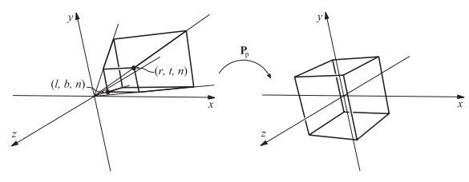
图4.20：透视投影矩阵 P_{p} 将视锥体转换为一个标准立方体，也叫做规则观察体。
《Real-Time Rendering》第 4 版，© CRC Press · 官方图集
参数（l , r , b , t , n , f l, r, b, t, n, f l , r , b , t , n , f l , r l, r l , r b , t b, t b , t r ≠ − l , t ≠ − b r \ne -l, t \ne -b r = − l , t = − b
视场角（field of view，FOV）是提供场景感的重要因素，与电脑屏幕相比，眼睛本身就有一个物理上的视场角（人类单眼的水平视场角最大可达156度，双眼的水平视场角最大可达188度；人类两眼的重合视场角为124度，单眼的舒适视场角为60度；当集中注意力时，视场角约为25度。），其中水平视场角的计算方法为：
ϕ = 2 arctan ( w / ( 2 d ) ) (4.70) \phi=2 \arctan (w /(2 d)) \tag{4.70} ϕ = 2 arctan ( w / ( 2 d )) ( 4.70 ) 其中ϕ \phi ϕ w w w d d d 85 ∘ 85^{\circ} 8 5 ∘ 58 ∘ 58^{\circ} 5 8 ∘ 40 ∘ 40^{\circ} 4 0 ∘ 35 m m 35mm 35 mm 50 m m 50mm 50 mm 36 m m 36mm 36 mm ϕ = 2 arctan ( 36 / ( 2 ⋅ 50 ) ) = 39.6 ∘ \phi=2 \arctan (36 /(2 \cdot 50))=39.6^{\circ} ϕ = 2 arctan ( 36/ ( 2 ⋅ 50 )) = 39. 6 ∘
如果使用比人眼物理视场角更小的视场角，会减弱透视的感觉，因为观察者在场景中的视野会被放大，就好像观察者被“拉近”场景一样；如果使用一个更大的视场角的话，会使得场景中的物体看起来很扭曲（例如使用相机的广角镜头），尤其是在靠近屏幕边缘的地方，会夸大近距离物体的比例。然而，视场角越大，意味着视野越广阔，可以让观察者感觉看到的物体更大，更加令人印象深刻；其优势在于可以为用户提供更多的环境信息。
我们使用透视投影矩阵来将视锥体转换为规则观察体，这个矩阵的具体形式如下：
P p = ( 2 n r − l 0 − r + l r − l 0 0 2 n t − b − t + b t − b 0 0 0 f + n f − n − 2 f n f − n 0 0 1 0 ) (4.71) \mathbf{P}_{p}=
\left(\begin{array}{cccc}
\dfrac{2 n}{r-l} & 0 & -\dfrac{r+l}{r-l} & 0 \\[2mm]
0 & \dfrac{2 n}{t-b} & -\dfrac{t+b}{t-b} & 0 \\[2mm]
0 & 0 & \dfrac{f+n}{f-n} & -\dfrac{2 f n}{f-n} \\[2mm]
0 & 0 & 1 & 0
\end{array}\right)
\tag{4.71} P p = r − l 2 n 0 0 0 0 t − b 2 n 0 0 − r − l r + l − t − b t + b f − n f + n 1 0 0 − f − n 2 f n 0 ( 4.71 ) 在使用这个矩阵对一个点进行透视投影之后，我们会获得一个新的顶点q = ( q x , q y , q z , q w ) T \mathbf{q}=\left(q_{x}, q_{y}, q_{z}, q_{w}\right)^{T} q = ( q x , q y , q z , q w ) T w w w q \mathbf{q} q w w w
p = ( q x q w , q y q w , q z q w , 1 ) (4.72) \mathbf{p}=\left(
\frac{q_{x}}{q_{w}},
\frac{q_{y}}{q_{w}},
\frac{q_{z}}{q_{w}},
1\right)
\tag{4.72} p = ( q w q x , q w q y , q w q z , 1 ) ( 4.72 ) 矩阵P p \mathbf{P}_{p} P p z = f z=f z = f z = + 1 z=+1 z = + 1 z = n z=n z = n z = − 1 z=-1 z = − 1
超出近裁剪平面和远裁剪平面的物体会被裁剪，因此并不会出现在场景中。我们也可以将透视投影的远裁剪平面设置在无穷远处（f → ∞ f \rightarrow \infty f → ∞
P p = ( 2 n r − l 0 − r + l r − l 0 0 2 n t − b − t + b t − b 0 0 0 1 − 2 n 0 0 1 0 ) (4.73) \mathbf{P}_{p}=\left(\begin{array}{cccc}\dfrac{2 n}{r-l} & 0 & -\dfrac{r+l}{r-l} & 0 \\ 0 & \dfrac{2 n}{t-b} & -\dfrac{t+b}{t-b} & 0 \\ 0 & 0 & 1 & -2 n \\ 0 & 0 & 1 & 0\end{array}\right)
\tag{4.73} P p = r − l 2 n 0 0 0 0 t − b 2 n 0 0 − r − l r + l − t − b t + b 1 1 0 0 − 2 n 0 ( 4.73 ) 综上所述，在投影变换（包括正交投影和透视投影）之后，还会进行裁剪操作和齐次化操作（homogenization，坐标除以w w w
为了获得可以在OpenGL中使用的透视变换矩阵，我们首先需要将方程4.71中的矩阵乘以S ( 1 , 1 , − 1 , 1 ) \mathbf{S}(1,1,-1,1) S ( 1 , 1 , − 1 , 1 ) 0 < n ′ < f ′ 0<n^{\prime}<f^{\prime} 0 < n ′ < f ′ n ′ , f ′ n^{\prime},f^{\prime} n ′ , f ′ z z z
P OpenGL = ( 2 n ′ r − l 0 r + l r − l 0 0 2 n ′ t − b t + b t − b 0 0 0 − f ′ + n ′ f ′ − n ′ − 2 f ′ n ′ f ′ − n ′ 0 0 − 1 0 ) . (4.74) \mathbf{P}_{\text {OpenGL }}=
\left(\begin{array}{cccc}
\dfrac{2 n^{\prime}}{r-l} & 0 & \dfrac{r+l}{r-l} & 0 \\[2mm]
0 & \dfrac{2 n^{\prime}}{t-b} & \dfrac{t+b}{t-b} & 0 \\[2mm]
0 & 0 & -\dfrac{f^{\prime}+n^{\prime}}{f^{\prime}-n^{\prime}} & -\dfrac{2 f^{\prime} n^{\prime}}{f^{\prime}-n^{\prime}}\\[2mm]
0 & 0 & -1 & 0
\end{array}\right).
\tag{4.74} P OpenGL = r − l 2 n ′ 0 0 0 0 t − b 2 n ′ 0 0 r − l r + l t − b t + b − f ′ − n ′ f ′ + n ′ − 1 0 0 − f ′ − n ′ 2 f ′ n ′ 0 . ( 4.74 ) 还有一个更简单的矩阵设置方法，即只提供垂直视场角ϕ \phi ϕ a = w / h a=w / h a = w / h w : w i d t h w:width w : w i d t h h : h e i g h t h:height h : h e i g h t n ′ , f ′ n^{\prime},f^{\prime} n ′ , f ′
P OpenGL = ( c / a 0 0 0 0 c 0 0 0 0 − f ′ + n ′ f ′ − n ′ − 2 f ′ n ′ f ′ − n ′ 0 0 − 1 0 ) , (4.75) \mathbf{P}_{\text {OpenGL }}=
\left(\begin{array}{cccc}
c / a & 0 & 0 & 0 \\[2mm]
0 & c & 0 & 0 \\[2mm]
0 & 0 & -\dfrac{f^{\prime}+n^{\prime}}{f^{\prime}-n^{\prime}} & -\dfrac{2 f^{\prime} n^{\prime}}{f^{\prime}-n^{\prime}} \\[2mm]
0 & 0 & -1 & 0
\end{array}\right),
\tag{4.75} P OpenGL = c / a 0 0 0 0 c 0 0 0 0 − f ′ − n ′ f ′ + n ′ − 1 0 0 − f ′ − n ′ 2 f ′ n ′ 0 , ( 4.75 ) 其中c = 1.0 / tan ( ϕ / 2 ) c=1.0 / \tan (\phi / 2) c = 1.0/ tan ( ϕ /2 ) g l u P e r s p e c t i v e ( ) \mathsf{gluPerspective()} gluPerspective ( )
有些图形API（例如DirectX）会将近裁剪平面映射到平面z = 0 z=0 z = 0 z = − 1 z=-1 z = − 1 z = 1 z=1 z = 1 z z z
P p [ 0 , 1 ] = ( 2 n ′ r − l 0 − r + l r − l 0 0 2 n ′ t − b − t + b t − b 0 0 0 f ′ f ′ − n ′ − f ′ n ′ f ′ − n ′ 0 0 1 0 ) (4.76) \mathbf{P}_{p[0,1]}=
\left(\begin{array}{cccc}\dfrac{2 n^{\prime}}{r-l} & 0 & -\dfrac{r+l}{r-l} & 0 \\[2mm]
0 & \dfrac{2 n^{\prime}}{t-b} & -\dfrac{t+b}{t-b} & 0 \\[2mm]
0 & 0 & \dfrac{f^{\prime}}{f^{\prime}-n^{\prime}} & -\dfrac{f^{\prime} n^{\prime}}{f^{\prime}-n^{\prime}} \\[2mm]
0 & 0 & 1 & 0
\end{array}\right)
\tag{4.76} P p [ 0 , 1 ] = r − l 2 n ′ 0 0 0 0 t − b 2 n ′ 0 0 − r − l r + l − t − b t + b f ′ − n ′ f ′ 1 0 0 − f ′ − n ′ f ′ n ′ 0 ( 4.76 ) 由于DirectX在其文档中使用行优先来表示变换矩阵，因此通常会使用这个矩阵的转置矩阵。
透视投影带来的一个影响是，计算出的深度值并不会随着输入的p z p_z p z p \mathbf{p} p v \mathbf{v} v
v = P p = ( ⋯ ⋯ d p z + e ± p z ) (4.77) \mathbf{v}=\mathbf{P} \mathbf{p}=\left(\begin{array}{c}\cdots \\ \cdots \\ d p_{z}+e \\ \pm p_{z}\end{array}\right)
\tag{4.77} v = Pp = ⋯ ⋯ d p z + e ± p z ( 4.77 ) 这里我们直接忽略了v x ， v y v_x，v_y v x ， v y d , e d,e d , e
d = − ( f ′ + n ′ ) / ( f ′ − n ′ ) , e = − 2 f ′ n ′ / ( f ′ − n ′ ) , v x = − p z . d=-\left(f^{\prime}+n^{\prime}\right) /\left(f^{\prime}-n^{\prime}\right),\\[2mm]
e=-2 f^{\prime} n^{\prime} /\left(f^{\prime}-n^{\prime}\right),\\[2mm]
v_{x}=-p_{z}. d = − ( f ′ + n ′ ) / ( f ′ − n ′ ) , e = − 2 f ′ n ′ / ( f ′ − n ′ ) , v x = − p z . 为了将这个点转换到NDC空间中，我们需要让点v \mathbf{v} v w w w
z N D C = d p z + e − p z = d − e p z (4.78) z_{\mathrm{NDC}}=\frac{d p_{z}+e}{-p_{z}}=d-\frac{e}{p_{z}}
\tag{4.78} z NDC = − p z d p z + e = d − p z e ( 4.78 ) 在OpenGL中，z N D C z_{\mathrm{NDC}} z NDC [ − 1 , + 1 ] [-1,+1] [ − 1 , + 1 ] z N D C z_{\mathrm{NDC}} z NDC p z p_z p z
例如：如果此时用户设定的n ′ = 10 , f ′ = 110 n^{\prime}=10,f^{\prime}=110 n ′ = 10 , f ′ = 110 p z p_z p z z z z n ′ , f ′ n^{\prime},f^{\prime} n ′ , f ′ [ − 1 , + 1 ] [-1,+1] [ − 1 , + 1 ] n ′ n^{\prime} n ′
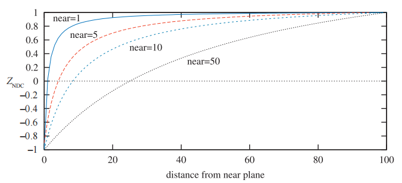
图4.21：随着近裁剪平面位置（ n^{\prime} ）发生变化时，所对应NDC坐标的深度变化。这里我们保持 f^{\prime}-n^{\prime} 的值为常数100。随着近裁剪平面距离原点越来越近，靠近远裁剪平面的点只占据了NDC深度空间的一小部分，这使得z-buffer在较远距离上的物体深度表示变得不那么精确。
《Real-Time Rendering》第 4 版，© CRC Press · 官方图集
有一些方法可以用来提高深度值的精度，其中反向z-buffer（reversed z）是一种比较常用的方法，当使用浮点数据来表示z-buffer的时候，反向z-buffer会存储1 − z N D C 1-z_{\mathrm{NDC}} 1 − z NDC z N D C z_{\mathrm{NDC}} z NDC Depth Precision Visualized | NVIDIA Developer ）通过模拟发现：使用浮点数的反向z-buffer可以提供最好的准确率；而反向z-buffer也是整数深度缓冲区（通常是24位整数）的首选方法。对于标准映射而言（即不使用反向z-buffer），正如Upchurch和Desbrun所建议的那样[1803]，在变换中使用分离的投影矩阵可以降低误差率。例如：相对于使用组合矩阵T p , T = P M \mathbf{T} \mathbf{p},\mathbf{T}=\mathbf{P M} Tp , T = PM P ( M p ) \mathbf{P}(\mathbf{M p}) P ( Mp ) [ 0.5 , 1 ] [0.5,1] [ 0.5 , 1 ] z N D C z_{\mathrm{NDC}} z NDC 1 / p z 1 / p_{z} 1/ p z
Lloyd [1063]提出，可以使用深度值的对数来提高阴影贴图（shadow map）的精度。Lauritzen等人[991]提出可以使用前一帧的z-buffer来确定当前帧的最大近裁剪平面和最小远裁剪平面。Kemen提出[881]，对于屏幕空间中的深度，可以对每个顶点使用下列的重映射：
z = w ( log 2 ( max ( 10 − 6 , 1 + w ) ) f c − 1 ) , [ OpenGL] z = w log 2 ( max ( 10 − 6 , 1 + w ) ) f c / 2 , [ DirectX ] (4.79) \begin{array}{ll}z=w\left(\log _{2}\left(\max \left(10^{-6}, 1+w\right)\right) f_{c}-1\right), & {[\text { OpenGL] }} \\ z=w \log _{2}\left(\max \left(10^{-6}, 1+w\right)\right) f_{c} / 2, & {[\text { DirectX }]}\end{array}
\tag{4.79} z = w ( log 2 ( max ( 1 0 − 6 , 1 + w ) ) f c − 1 ) , z = w log 2 ( max ( 1 0 − 6 , 1 + w ) ) f c /2 , [ OpenGL] [ DirectX ] ( 4.79 ) 其中w w w w w w z z z z z z f c = 2 / log 2 ( f + 1 ) f_{c}=2 / \log _{2}(f+1) f c = 2/ log 2 ( f + 1 ) f f f e = 1 + w e=1+w e = 1 + w e e e log 2 ( e i ) f c / 2 \log _{2}\left(e_{i}\right) f_{c} / 2 log 2 ( e i ) f c /2 e i e_i e i e e e
Cozzi [1605]提出可以使用多个视锥体，从而将精度提高到任何我们所期望的准确率。这个方法的核心思路是，将大的视锥体在深度方向上划分成若干个不重叠的小视锥体，这些小视锥体结合在一起就是原来的大视锥体。这些小视锥体会按照从后往前的顺序进行渲染，首先会清除颜色缓冲和深度缓冲，然后将所有需要渲染的物体，分类到与之重叠的每个小视锥体中；而对于每个小视锥体，则会生成各自的投影矩阵并清除自身的深度缓冲，然后渲染每个与小视锥体重叠的物体。
补充阅读和资源#
网站http://immersivemath.com/ila/index.html [1718]提供了一个与本章有关的交互式书籍，它鼓励你通过交互操作与调整数值的方式，来建立对于线性代数的直觉。其他的交互式学习工具和有关变换的代码库，都可以在realtimerendering.com 上找到链接。
Farin与Hansford编写了书籍《The Geometry Toolbox》[461]，它是无痛建立矩阵直觉的最好书籍之一。另一本非常有用的3D数学书籍是Lengyel所编写的《Mathematics for 3D Game Programming and Computer Graphics》[689]（这本书有中文版）。换一种角度看，Hearn和Baker [689]（《计算机图形学》），Marschner和Shirley [1129]（虎书），以及Hughes（《计算机图形学原理及实践 3rd》）等人[785]所编写计算机图形学书籍中，也都包含了有关矩阵基础的内容。Ochiai等人的课程介绍了矩阵的基础知识，以及矩阵指数和矩阵对数的相关内容，这些内容在计算机图形学中十分常用。《Graphics Gems》系列书籍[72, 540, 695, 902, 1344]提供了各种与变换相关的算法，其中很多算法都有在线的代码实现。Golub和Van Loan所编写的《Matrix Computations》[556]是一本学习通用矩阵技术的入门书籍。更多有关骨架子空间变形、顶点混合以及形状插值的内容，可以阅读Lewis等人的SIGGRAPH论文[1037]。
Hart等人[674]和Hanson [663]提供了对于四元数的可视化理解（还有3b1b的视频以及互动视频网站）。Pletinckx [1421]和Schlag [1566]提出了一种在四元数之间进行平滑插值的方法。Vlachos和Isidoro [1820]推导了对于四元数的C 2 C^2 C 2
Alexa [28]、Lazarus与Verroust [1000]调查了一系列不同的变形技术。Parent的书籍[1354]是一本学习计算机动画的良好地方。（详细的论文及书籍链接可以在realtimerendering.com 网站上找到）.